UNIVERSIDAD AUTÓNOMA DE ENTRE RÍOS
Facultad de Ciencia y Tecnología — Licenciatura en Sistemas de Información
Cátedra: Bases de Datos Avanzadas (4º año)
Riesgo Hídrico y Accesibilidad Sanitaria en Entre Ríos
Departamento de referencia: La Paz
Localidad de referencia: La Paz
Docentes: Lic. Sebastián Trossero — Ing. Jorge Schmukler
Integrantes: Mariano Gervasoni
Fecha: 24/10/2026
En este trabajo construimos una base de datos espacial en PostgreSQL/PostGIS para analizar la relación entre la red hídrica, la red vial, las localidades y los establecimientos de salud del departamento La Paz, en el noroeste de Entre Ríos. Algunos análisis se extienden a toda la provincia para poder comparar.
Con 6.643 km² según el IGN, La Paz es el segundo departamento más extenso de la provincia, después de Gualeguaychú. Limita al oeste con el río Paraná (y la provincia de Santa Fe), al norte con el río Guayquiraró (y Corrientes) y, dentro de la provincia, con Federal (175,5 km), Paraná (92,6 km), Feliciano (70,4 km), Villaguay (33,3 km). En OpenStreetMap tiene 9 localidades y 15 establecimientos de salud. Lo cruzan arroyos importantes (Feliciano, Estacas, Alcaraz, Hernandarias), lo que lo convierte en un buen caso para estudiar riesgo hídrico y accesibilidad.
La idea que guió el trabajo fue que cada consulta respondiera una pregunta concreta, de las que podría hacerse alguien de Defensa Civil o del hospital zonal durante una crecida, y no quedarse en el ejercicio técnico de aplicar funciones espaciales. Por eso en cada punto, además del resultado y de cómo se calculó, discutimos qué dice sobre el territorio y dónde el dato tiene limitaciones.
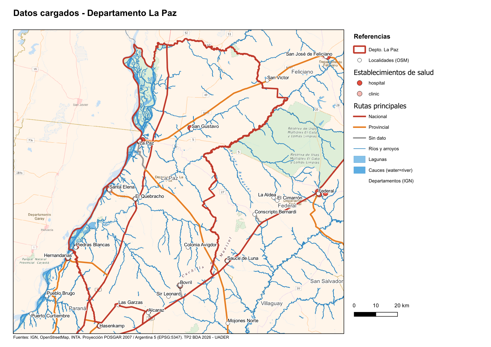
| Fuente | Capa / servicio | Uso |
|---|---|---|
| IGN | WFS ign:departamento (SHP, EPSG:4326, 17 departamentos de Entre Ríos) | departamentos, límites, superficies |
| IGN | Argenmap (TMS, EPSG:3857) | mapa base para visualizar y comparar (no se almacena) |
| OpenStreetMap | Extracto Geofabrik de Argentina (.osm.pbf), recortado a Entre Ríos con ogr2ogr -spat | localidades, rutas, calles, ríos, lagunas, salud |
| INTA | WFS geo-nodo03: Carta de Suelos de Entre Ríos 1:100.000 | aptitud del suelo (índice de productividad) |
Para OpenStreetMap la consigna sugiere QuickOSM, que consulta la API Overpass. Mientras hacíamos el trabajo
el servidor principal de Overpass rechazaba las conexiones y los espejos devolvían 504 Gateway Timeout,
porque la consulta de calles a escala provincial es grande. Como la consigna permite otro origen,
usamos el extracto diario de Geofabrik (son los mismos datos de OSM) y aplicamos los mismos filtros de etiquetas que
indica la consigna (place, highway, waterway, natural=water,
amenity), con un osmconf.ini propio para conservar ref, bridge,
water y surface.
En el caso del INTA, el WFS de la Región Entre Ríos publica una sola capa vectorial: la Carta de Suelos 1:100.000 (4.508 polígonos). No describe el uso actual del suelo sino su aptitud, a través del Índice de Productividad (IPC) de cada unidad cartográfica. El punto 12 se resolvió con esa información (los criterios están en la sección 9).
Las herramientas fueron PostgreSQL 18.3 con PostGIS 3.6.2 y pgRouting 4.0.1 (para los puntos 13 y 14), GDAL/ogr2ogr para la carga y QGIS 3.44 para visualizar, componer y exportar los mapas.
Los datos se almacenan en EPSG:4326 (WGS84). Como los grados no son una unidad métrica, para distancias, longitudes y superficies se reproyecta a EPSG:5347 – POSGAR 2007 / Argentina faja 5 (Gauss-Krüger, meridiano central −60°).
geography (elipsoide) y 78.413 km² en EPSG:5347,
una diferencia menor al 0,03 %.Para no repetir ST_Transform en cada consulta, cada tabla tiene una columna generada
geom_m en 5347, indexada con GiST:
geom_m geometry(MultiPolygon, 5347) GENERATED ALWAYS AS (ST_Transform(geom, 5347)) STOREDLa única excepción es fn_hospital_cercano (punto 10.3), que usa geography porque recibe una
coordenada arbitraria que puede estar en cualquier lugar.
La base tp2_bdg tiene las extensiones postgis y pgrouting y está organizada en dos esquemas.
En fuentes quedan las capas tal como se descargaron (cargadas con ogr2ogr), y en entrerios
las tablas depuradas, tipadas y recortadas a la provincia, más las tablas de resultados de cada punto (r7_* … r14_*).
ogr2ogr -f PostgreSQL "PG:dbname=tp2_bdg user=postgres" departamentoPolygon.shp \
-nln ign_departamentos -lco SCHEMA=fuentes -lco GEOMETRY_NAME=geom \
-oo ENCODING=ISO-8859-1 -nlt PROMOTE_TO_MULTI
ogr2ogr -f PostgreSQL "PG:..." suelos.geojson -nln inta_suelos -lco SCHEMA=fuentes ...
ogr2ogr -f PostgreSQL "PG:..." entrerios_osm.gpkg lines -nln osm_lines -lco SCHEMA=fuentes ...Tablas del esquema entrerios (las mínimas pedidas más algunas auxiliares):
| Tabla | Origen y filtro | Decisiones |
|---|---|---|
| departamentos | IGN, código INDEC 30xxx | ST_MakeValid; contorno provincial auxiliar provincia = ST_Union |
| localidades | OSM place = city, town, village | departamento por ST_Within; depuración de duplicados por Wikidata (ver abajo) |
| rutas | OSM highway = motorway, trunk, primary, secondary | jurisdicción derivada de ref (RN/RP); recorte a la provincia |
| rios | OSM waterway = river, stream | recorte a la provincia |
| lagunas | OSM natural=water (lake, pond, lagoon, oxbow, reservoir, sin subtipo) | se excluye water=river (cauces), que va a rios_area |
| calles | OSM highway = primary, secondary, tertiary, residential, unclassified | marca de puente y superficie |
| salud | OSM amenity = hospital, clinic (puntos y polígonos) | polígono → ST_PointOnSurface; se descartan puntos dentro de un polígono de salud (duplicados) |
| suelo | INTA WFS Carta de Suelos | clase de aptitud según IPC (punto 12) |
Hubo dos decisiones de modelado que después pesaron en varios puntos. La primera fue qué contar como laguna.
OSM etiqueta con natural=water también el cauce de los ríos (water=river: el Paraná, el Guayquiraró,
los riachos del delta). En La Paz esos polígonos suman unos 144 km², contra 35,2 km² de lagunas propiamente dichas;
si los dejábamos juntos, el Paraná dominaba cualquier indicador de agua y el ranking del punto 7.3 perdía sentido. Por eso los
separamos en una tabla aparte, rios_area, y en lagunas quedaron solo los polígonos con subtipo lake, pond,
lagoon, oxbow, reservoir o sin subtipo.
La segunda fue depurar una localidad duplicada. En OSM aparecen dos nodos «La Paz» dentro del departamento: la ciudad (osm 198457357, town, 24.716 hab.) y un village de «500 hab.» ubicado 45 km al norte, sobre la RN12. Los dos apuntan al mismo objeto de Wikidata (Q2440276), así que el segundo es un nodo duplicado y mal ubicado. En lugar de borrarlo a mano lo eliminamos con una regla general: si dos localidades comparten Wikidata se conserva la de mayor jerarquía. Sin esta depuración el nodo falso aparecía como la localidad más alejada de un servicio de salud (8.4) y corría la ubicación propuesta en el punto 14, como se cuenta al final del informe.
Para no revisar tabla por tabla escribimos fn_control_calidad(), que recorre geometry_columns y arma
dinámicamente, con format() y EXECUTE, una consulta por tabla que compara el tipo de geometría declarado
con el real (ST_GeometryType), el SRID declarado con el real (ST_SRID), y cuenta registros, geometrías nulas,
vacías (ST_IsEmpty) e inválidas (ST_IsValid):
CREATE OR REPLACE FUNCTION entrerios.fn_control_calidad()
RETURNS TABLE (tabla text, columna text, tipo_declarado text, srid_declarado int,
tipos_reales text, srids_reales text, registros bigint,
nulas bigint, vacias bigint, invalidas bigint)
LANGUAGE plpgsql AS $$
DECLARE r record;
BEGIN
FOR r IN SELECT f_table_name AS t, f_geometry_column AS c, type, srid
FROM geometry_columns
WHERE f_table_schema = 'entrerios' AND f_geometry_column = 'geom'
ORDER BY 1
LOOP
RETURN QUERY EXECUTE format($q$
SELECT %L::text, %L::text, %L::text, %s,
(SELECT string_agg(DISTINCT ST_GeometryType(%2$I), ', ') FROM entrerios.%1$I),
(SELECT string_agg(DISTINCT ST_SRID(%2$I)::text, ', ') FROM entrerios.%1$I),
count(*),
count(*) FILTER (WHERE %2$I IS NULL),
count(*) FILTER (WHERE ST_IsEmpty(%2$I)),
count(*) FILTER (WHERE NOT ST_IsValid(%2$I))
FROM entrerios.%1$I $q$, r.t, r.c, r.type, r.srid);
END LOOP;
END $$;
SELECT * FROM entrerios.fn_control_calidad();| Tabla | Tipo declarado | Tipo real | SRID decl. | SRID real | Registros | Nulas | Vacías | Inválidas |
|---|---|---|---|---|---|---|---|---|
| calles | MULTILINESTRING | ST_MultiLineString | 4.326 | 4326 | 35.785 | 0 | 0 | 0 |
| departamentos | MULTIPOLYGON | ST_MultiPolygon | 4.326 | 4326 | 17 | 0 | 0 | 0 |
| lagunas | MULTIPOLYGON | ST_MultiPolygon | 4.326 | 4326 | 3.481 | 0 | 0 | 0 |
| localidades | POINT | ST_Point | 4.326 | 4326 | 161 | 0 | 0 | 0 |
| provincia | MULTIPOLYGON | ST_MultiPolygon | 4.326 | 4326 | 1 | 0 | 0 | 0 |
| rios | MULTILINESTRING | ST_MultiLineString | 4.326 | 4326 | 8.670 | 0 | 0 | 0 |
| rios_area | MULTIPOLYGON | ST_MultiPolygon | 4.326 | 4326 | 190 | 0 | 0 | 0 |
| rutas | MULTILINESTRING | ST_MultiLineString | 4.326 | 4326 | 3.977 | 0 | 0 | 0 |
| salud | POINT | ST_Point | 4.326 | 4326 | 204 | 0 | 0 | 0 |
| suelo | MULTIPOLYGON | ST_MultiPolygon | 4.326 | 4326 | 4.508 | 0 | 0 | 0 |
Las tablas depuradas no tienen geometrías inválidas porque la corrección se hizo durante la carga. En las fuentes crudas sí había,
y se repararon con ST_MakeValid:
SELECT 'ign_departamentos' AS fuente, count(*) FILTER (WHERE NOT ST_IsValid(geom)) AS invalidas
FROM fuentes.ign_departamentos
UNION ALL
SELECT 'osm_multipolygons (natural=water)', count(*) FILTER (WHERE NOT ST_IsValid(geom))
FROM fuentes.osm_multipolygons WHERE "natural" = 'water'
UNION ALL
SELECT 'inta_suelos', count(*) FILTER (WHERE NOT ST_IsValid(geom))
FROM fuentes.inta_suelos;
SELECT osm_id, name, ST_IsValidReason(geom) AS motivo
FROM fuentes.osm_multipolygons
WHERE "natural" = 'water' AND NOT ST_IsValid(geom) LIMIT 10;
UPDATE entrerios.lagunas SET geom = ST_Multi(ST_CollectionExtract(ST_MakeValid(geom), 3)) WHERE NOT ST_IsValid(geom);
UPDATE entrerios.rios_area SET geom = ST_Multi(ST_CollectionExtract(ST_MakeValid(geom), 3)) WHERE NOT ST_IsValid(geom);| Fuente | Inválidas |
|---|---|
| IGN departamentos | 0 |
| OSM natural=water | 6 |
| INTA suelos | 7 |
| Ejemplo de motivo (ST_IsValidReason) |
|---|
| Self-intersection[-60.8489052880016 -32.0320825532404] |
| Self-intersection[-60.8498905104601 -32.2083153582897] |
| Self-intersection[-60.8498840790095 -31.9529263958086] |
Los polígonos de agua inválidos son auto-intersecciones en el borde del rectángulo de recorte de OSM (longitud −60,85°,
latitudes −34,1° y −30,1°): son polígonos cortados que quedan fuera de la provincia. Los 7 polígonos del INTA tienen
anillos que se cruzan a sí mismos y quedaron reparados. Como control topológico adicional verificamos que la suma de las superficies departamentales
(78.412,9 km²) coincide con el área del contorno provincial
(78.412,9 km²), o sea que no hay superposiciones ni huecos entre departamentos. También hicimos el control
puntual que pide la consigna, con ST_GeometryType y ST_SRID sobre los departamentos:
SELECT nombre, ST_GeometryType(geom) AS tipo, ST_SRID(geom) AS srid,
ST_IsValid(geom) AS valida, ST_NPoints(geom) AS vertices
FROM entrerios.departamentos ORDER BY nombre;La Paz limita con cuatro departamentos entrerrianos: Federal (175,5 km), Paraná (92,6 km), Feliciano (70,4 km), Villaguay (33,3 km). Para encontrarlos usamos ST_Intersects
entre el polígono de La Paz y el resto, y después medimos la longitud del límite compartido con ST_Intersection
de los ST_Boundary, para descartar los contactos que se dan en un solo punto. Un detalle que vale la pena contar es que
ST_Touches da verdadero solo para Paraná y Villaguay: en los otros límites los vértices del IGN no coinciden
exactamente y hay superposiciones de milímetros, así que no conviene depender de un único predicado topológico estricto.
Federal es el vecino con el que más límite se comparte. Además de estos cuatro, el departamento limita con Santa Fe (por el Paraná)
y con Corrientes (por el Guayquiraró), que no forman parte de la capa provincial.
| Vecino | ST_Touches | Límite (km) |
|---|---|---|
| Federal | No | 175,5 |
| Paraná | Sí | 92,60 |
| Feliciano | No | 70,40 |
| Villaguay | Sí | 33,30 |
La frontera con cada vecino se guardó como MultiLineString en r7_frontera, calculada con
ST_LineMerge(ST_CollectionExtract(ST_Intersection(ST_Boundary(a.geom), ST_Boundary(b.geom)), 2)), para poder dibujarla
en QGIS (Figura 2). La más larga es la frontera con Federal, y un 85 % de su recorrido pasa a menos de 300 m de un arroyo
(Feliciano, Estacas, del Yeso, Don Gonzalo y otros): los límites departamentales se trazaron siguiendo la red de drenaje.
Para el riesgo hídrico esto tiene una consecuencia práctica, porque casi cualquier paso entre La Paz y sus vecinos es un cruce de agua.
| Frontera | Tipo | km | % a ≤300 m de un curso de agua |
|---|---|---|---|
| La Paz - Federal | ST_MultiLineString | 175,5 | 85,30 |
| La Paz - Paraná | ST_MultiLineString | 92,60 | 57,80 |
| La Paz - Feliciano | ST_MultiLineString | 70,40 | 82,60 |
| La Paz - Villaguay | ST_MultiLineString | 33,30 | 55,40 |
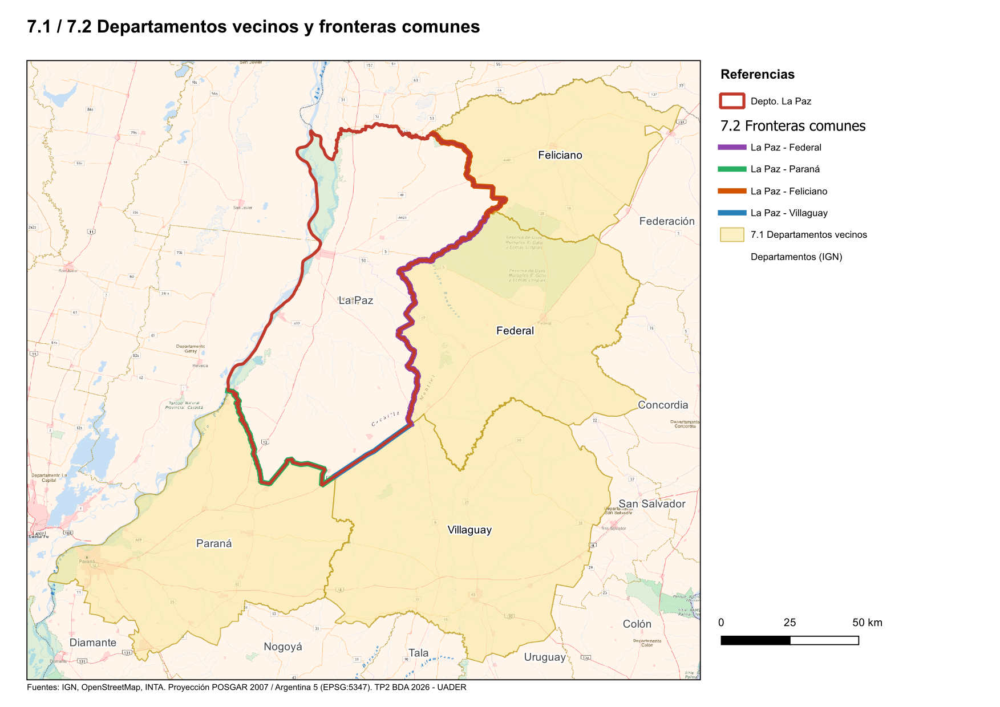
En el ranking provincial de cuerpos de agua La Paz ocupa el puesto 6 de 17, con 256 lagunas.
Cada laguna se asignó a un solo departamento con ST_Within(ST_PointOnSurface(laguna), depto), para no
contar dos veces las que cruzan un límite, y además de la cantidad calculamos la superficie y la densidad cada 100 km².
Este ranking hay que leerlo con cuidado, porque la fuente tiene varias limitaciones. OSM es colaborativo y su completitud depende
de quién mapeó cada zona: Federación encabeza la lista por la cantidad de pequeños estanques y tajamares que alguien cargó, no necesariamente
por tener más agua. La cantidad tampoco mide importancia (Victoria tiene menos lagunas que Federación pero diez veces su superficie,
por las lagunas del delta), y una laguna grande puede estar partida en varios polígonos o cargada como uno solo. En La Paz, el 90 % de los
polígonos no tiene subtipo water ni nombre, así que no se puede distinguir una laguna natural de una represa. Y las lagunas
temporarias cambian con el régimen de lluvias, mientras que OSM refleja la imagen satelital que se usó al mapear.
| # | Departamento | Cantidad | Superficie (km²) | Cada 100 km² |
|---|---|---|---|---|
| 1 | Federación | 594 | 40,24 | 15,81 |
| 2 | Victoria | 420 | 385,2 | 6,35 |
| 3 | Nogoyá | 381 | 4,25 | 8,70 |
| 4 | Concordia | 290 | 4,40 | 8,80 |
| 5 | Uruguay | 289 | 3,33 | 5,63 |
| 6 | La Paz | 256 | 35,24 | 3,85 |
| 7 | Paraná | 171 | 4,14 | 3,35 |
| 8 | Tala | 167 | 1,98 | 6,31 |
| 9 | Gualeguaychú | 166 | 4,45 | 2,20 |
| 10 | Diamante | 160 | 68,75 | 5,95 |
| 11 | Colón | 156 | 1,71 | 5,64 |
| 12 | Gualeguay | 140 | 47,38 | 2,13 |
| 13 | Villaguay | 72 | 2,64 | 1,09 |
| 14 | San Salvador | 67 | 0,41 | 5,02 |
| 15 | Federal | 64 | 13,56 | 1,23 |
| 16 | Islas del Ibicuy | 57 | 10,74 | 1,14 |
| 17 | Feliciano | 31 | 25,99 | 0,98 |
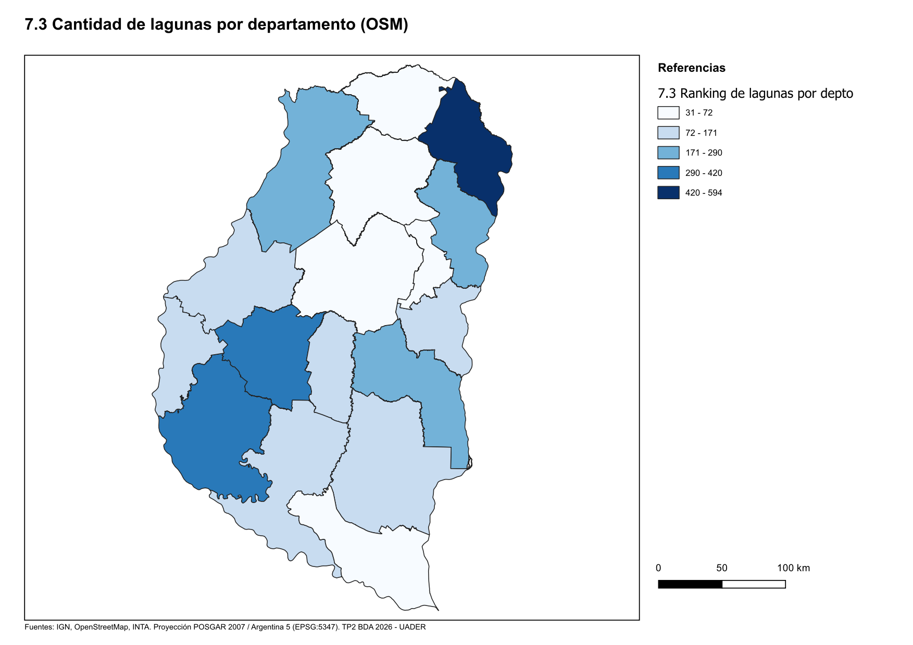
La superficie total del departamento es de 6.643,10 km², de los cuales 35,24 km² (0,53 %) están
cubiertos por lagunas y el resto, 6.607,86 km², es tierra firme. Si se suman los cauces del Paraná y sus riachos, el agua llega a
178,74 km² (2,69 %). Para calcularlo intersectamos cada polígono de agua con el departamento
(ST_Intersection), disolvimos el resultado con ST_Union para no contar superposiciones y medimos con
ST_Area en EPSG:5347, dividiendo por 10⁶. Lo que queda claro es que el agua permanente ocupa una fracción mínima
del territorio: el riesgo hídrico de La Paz no está en sus lagunas sino en los desbordes de los arroyos y del Paraná, y por eso en el
punto 9 trabajamos con zonas de influencia y no solo con los espejos de agua.
| Total km² | Lagunas km² | Restante km² | % lagunas | Agua c/cauces km² | % c/cauces |
|---|---|---|---|---|---|
| 6.643,1 | 35,24 | 6.607,9 | 0,53 | 178,7 | 2,69 |
Dentro del departamento hay 35 cursos de agua con nombre y 1.683.363 m (unos 1.683 km) de ríos y
arroyos en total. La longitud se calculó con ST_Length(ST_Intersection(rio.geom_m, depto.geom_m)), agrupando por nombre
porque en OSM un mismo arroyo está partido en muchos ways. El arroyo Feliciano es el eje hídrico interno más importante, con unos
158 km dentro del departamento. Llama la atención que la mitad de la longitud corresponda a cursos sin nombre: la red de drenaje es muy
densa, y eso explica la extensión que alcanza la zona de riesgo del punto 9.
| Curso | Tipo OSM | Tramos | Longitud (m) |
|---|---|---|---|
| (sin nombre) | river/stream | 450 | 852.078 |
| Arroyo Feliciano | river | 19 | 157.749 |
| Arroyo Estacas | river | 10 | 74.635 |
| Arroyo Alcaraz | river | 10 | 71.136 |
| Arroyo Don Gonzalo | river/stream | 7 | 66.317 |
| Río Paraná | river | 12 | 63.025 |
| Riacho Espinillo | river | 4 | 50.153 |
| Río Guayquiraró | river | 5 | 38.034 |
| Arroyo Ombucito | river | 8 | 34.092 |
| Arroyo del Yeso | river | 6 | 31.111 |
| Arroyo Hondo | river/stream | 10 | 26.828 |
| Arroyo Hernandarias | river | 6 | 25.953 |
| Arroyo de las Mulas | stream | 6 | 20.431 |
| Arroyo Fray Diego | stream | 9 | 19.829 |
| Arroyo del Yacaré | river | 3 | 18.309 |
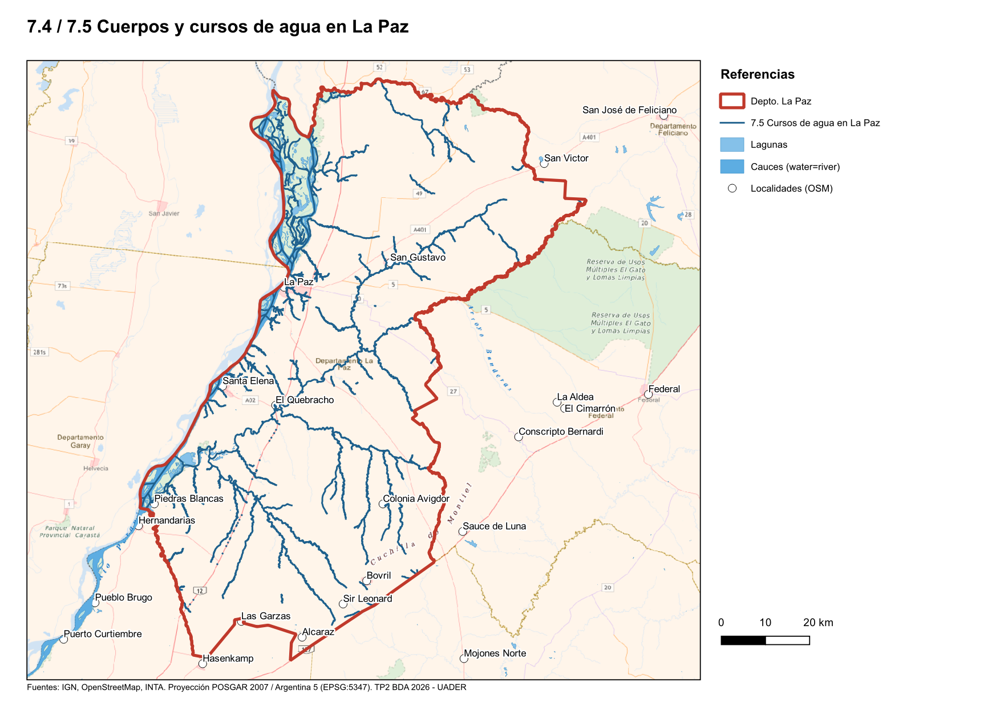
Atraviesan el departamento dos rutas nacionales (RN12 y RN127) y las provinciales RP1 y RP6, más los accesos RPA01 a RPA03;
en total son 324,4 km de red principal. La selección se hizo con el filtro highway = motorway/trunk/primary/secondary,
la jurisdicción se derivó del tag ref (RN o RP) y los kilómetros salen de
ST_Length(ST_Intersection(ruta.geom_m, depto.geom_m))/1000 agrupado por ruta. La RN12 es la columna vertebral del
departamento: lo recorre de sur a norte y concentra el 40 % de los kilómetros. Los ~30 km que figuran «sin ref» son tramos
secondary a los que nadie les cargó el número en OSM, un problema de completitud de la fuente más que del análisis.
| Ruta | Jurisdicción | Categoría OSM | km |
|---|---|---|---|
| RN12 | Nacional | trunk | 128,4 |
| RP1 | Provincial | primary | 58,16 |
| RP6 | Provincial | secondary | 55,40 |
| (sin ref) | Sin dato | secondary | 30,65 |
| RN127 | Nacional | primary | 17,92 |
| RPA03 | Provincial | secondary | 16,70 |
| RPA02 | Provincial | primary | 13,42 |
| RPA01 | Provincial | primary | 3,79 |
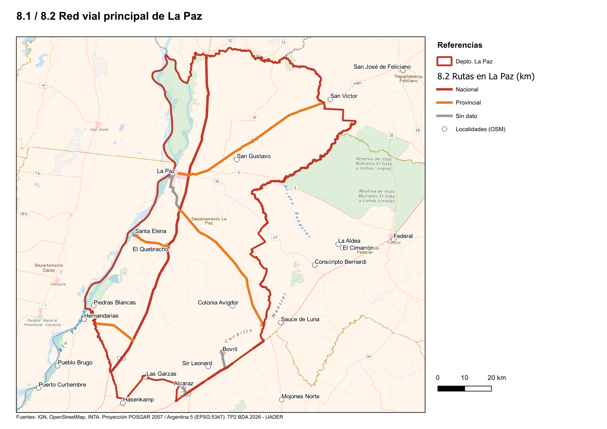
En OSM figuran 15 establecimientos de salud en La Paz: 7 hospitales y 8 clínicas o consultorios.
A cada uno le asignamos la localidad más cercana con el operador KNN (<->) y calculamos la distancia al
establecimiento vecino más próximo. La distribución resulta claramente concentrada: todos están dentro o en el borde de una localidad
(la mediana de distancia entre vecinos es de unos 400 m) y la ciudad de La Paz reúne seis. El espacio rural entre localidades no tiene
ninguna oferta. Con 22,6 establecimientos cada 10.000 km², el departamento está en el puesto 7 de 17, muy lejos de Paraná (105,8).
| Localidad | Total | Hospitales | Clínicas |
|---|---|---|---|
| La Paz | 6 | 2 | 4 |
| Bovril | 3 | 1 | 2 |
| Santa Elena | 2 | 1 | 1 |
| Alcaraz | 1 | 1 | 0 |
| San Gustavo | 1 | 1 | 0 |
| Piedras Blancas | 1 | 1 | 0 |
| El Quebracho | 1 | 0 | 1 |
La localidad más alejada de un servicio de salud es Colonia Avigdor, a 17.922 m de «Clínica del Sol». El criterio
que adoptamos fue la distancia euclídea en EPSG:5347 desde el punto de la localidad hasta el establecimiento más cercano, buscado
en toda la provincia, porque una persona que vive en el borde del departamento puede atenderse en el vecino. La búsqueda usa KNN
(ORDER BY s.geom_m <-> l.geom_m LIMIT 1) dentro de un CROSS JOIN LATERAL; también calculamos la variante
«solo hospitales», y la distancia por red vial se trata en el punto 13. Las localidades sin oferta propia, Colonia Avigdor y Sir Leonard,
dependen de otra localidad. En el caso de Colonia Avigdor, por red vial el hospital más cercano está en otro departamento
(Hospital Crispín Velázquez, en Federal; ver punto 13).
| # | Localidad | Población | Establecimiento más cercano | Tipo | Distancia (m) |
|---|---|---|---|---|---|
| 1 | Colonia Avigdor | 692 | Clínica del Sol | clinic | 17.922 |
| 2 | Sir Leonard | 281 | Hospital San Miguel | hospital | 7.226 |
| 3 | San Gustavo | 2.000 | Hospital Gregoria Perez | hospital | 833 |
| 4 | Alcaraz | 2.578 | Hospital Ecuador | hospital | 548 |
| 5 | Piedras Blancas | 1.767 | Centro de Salud | hospital | 402 |
| 6 | Santa Elena | 5.000 | Centro de Salud Materno Infantil | clinic | 275 |
| 7 | Bovril | 8.790 | Clínica Bovril | clinic | 227 |
| 8 | El Quebracho | Centro de Salud | clinic | 87 | |
| 9 | La Paz | 24.716 | Consultorio Medico Centro Medico Lawrie | clinic | 81 |
De las 9 localidades del departamento, 2 quedan fuera de la cobertura de 5 km: Colonia Avigdor y Sir Leonard.
La cobertura se construyó con ST_Union(ST_Buffer(s.geom_m, 5000)) sobre los establecimientos a menos de 5 km del
departamento (incluyendo los de los vecinos), y las localidades sin cobertura salen de un
NOT EXISTS (… ST_Intersects(cobertura, localidad)). El área cubierta abarca solo el 7,6 % del territorio
departamental. Las localidades que quedan afuera son las más chicas y rurales: ahí la atención depende de traslados largos por caminos
de tierra que, como se ve en el punto 9, cruzan arroyos. Y el 92 % del territorio, donde vive la población rural dispersa, está a más de
5 km de cualquier servicio de salud.
| Localidad | Población | Distancia al más cercano (m) |
|---|---|---|
| Colonia Avigdor | 692 | 17.922 |
| Sir Leonard | 281 | 7.226 |
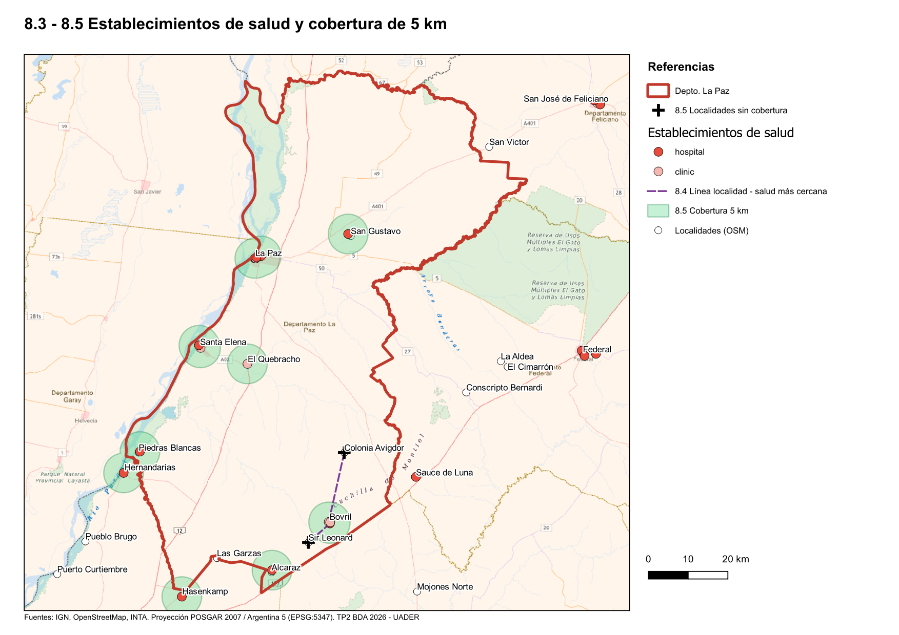
La Zona de Riesgo Hídrico de La Paz ocupa 4.080,2 km², el 61,4 % del departamento. También calculamos una
variante «principal», sin los arroyos menores (stream), que da 2.715,0 km² (40,9 %). Para cada departamento
se toman los elementos hídricos a menos de 2 km (ST_DWithin, que aprovecha el índice), se simplifican a 25 m con
ST_Simplify, se les aplica un ST_Buffer de 2.000 m, se disuelven con ST_Union y se recortan con
ST_Intersection. La simplificación no es un detalle menor: la primera versión, con el buffer sobre la colección completa,
tardaba más de 10 minutos por la cantidad de vértices; con un buffer de 2 km el detalle de 25 m es irrelevante y el cálculo bajó a
segundos por departamento.
Con una red de drenaje tan densa, un buffer de 2 km cubre casi dos tercios del territorio. Es una simplificación académica, que no reemplaza un mapa oficial de inundación, y su resultado depende mucho de qué tan detallado esté mapeado OSM; por eso trabajamos con las dos variantes a lo largo del informe.
INSERT INTO entrerios.zona_riesgo_hidrico (id_depto, depto, geom_m, geom_m_principal)
SELECT d.id, d.nombre,
ST_Multi(ST_CollectionExtract(ST_Intersection(
ST_Union(ST_Buffer(ST_Simplify(h.g, 25), 2000, 4)), d.geom_m), 3)),
ST_Multi(ST_CollectionExtract(ST_Intersection(
ST_Union(ST_Buffer(ST_Simplify(h.g, 25), 2000, 4)) FILTER (WHERE h.principal), d.geom_m), 3))
FROM entrerios.departamentos d
CROSS JOIN LATERAL (
SELECT r.geom_m AS g, r.tipo = 'river' AS principal FROM entrerios.rios r
WHERE ST_DWithin(r.geom_m, d.geom_m, 2000)
UNION ALL SELECT l.geom_m, true FROM entrerios.lagunas l WHERE ST_DWithin(l.geom_m, d.geom_m, 2000)
UNION ALL SELECT a.geom_m, true FROM entrerios.rios_area a WHERE ST_DWithin(a.geom_m, d.geom_m, 2000)
) h GROUP BY d.id;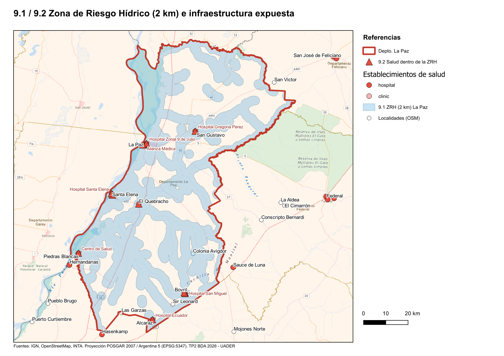
Los 15 establecimientos de salud del departamento, es decir todos, están dentro de la ZRH. Se detectaron con
ST_Intersects(zrh.geom_m, salud.geom_m) y para cada uno buscamos el elemento hídrico más cercano con KNN sobre ríos, lagunas y
cauces. El resultado no sorprende si se piensa en cómo se fundaron las localidades de La Paz: junto al Paraná o a un arroyo, por el agua
para consumo, los puertos y los molinos. En la práctica la amenaza no es igual para todos (los de la ciudad de La Paz están sobre la
barranca, bien por encima del nivel del río), pero el dato indica que ante una crecida ningún establecimiento puede considerarse a salvo
del aislamiento, y que hay que planificar su acceso y abastecimiento (puntos 9.3 y 13).
| Establecimiento | Tipo | Agua más cercana | Distancia (m) |
|---|---|---|---|
| Centro de Salud | clinic | (curso sin nombre) | 121 |
| Hospital Santa Elena | hospital | (cauce sin nombre) | 204 |
| Alianza Médica | hospital | Arroyo Cabayú Cutiá | 327 |
| Hospital Gregoria Perez | hospital | (curso sin nombre) | 350 |
| Mayo | clinic | Arroyo Cabayú Cutiá | 445 |
| Consultorio Medico Dm Diagnostico Medico | clinic | Arroyo Cabayú Cutiá | 464 |
| Centro De Dialisis Instituto De Nefrologia De Entre Rios Siglo XXI | clinic | (cauce sin nombre) | 483 |
| Consultorio Medico Centro Medico Lawrie | clinic | Arroyo Cabayú Cutiá | 491 |
| Hospital San Miguel | hospital | (laguna sin nombre) | 631 |
| Hospital Zonal 9 de Julio | hospital | Arroyo Los Paraísos | 633 |
| Centro de Salud | hospital | (curso sin nombre) | 674 |
| Clínica del Sol | clinic | (laguna sin nombre) | 703 |
| Centro de Salud Materno Infantil | clinic | (curso sin nombre) | 777 |
| Hospital Ecuador | hospital | (laguna sin nombre) | 803 |
| Clínica Bovril | clinic | (laguna sin nombre) | 810 |
Para detectar posibles situaciones de aislamiento armamos una clasificación ALTO/MEDIO/BAJO por localidad y un inventario de cruces
entre la red vial principal y los cursos de agua. Para cada localidad buscamos el punto más cercano de la red RN/RP con
ST_ClosestPoint y construimos el conector localidad→ruta con ST_MakeLine; si ese conector cruza un río o arroyo
(ST_Intersects), la salida a la red principal depende de un puente o una alcantarilla. Después medimos qué proporción de las
vías a menos de 5 km (ST_DWithin) cae dentro de la ZRH. El riesgo es ALTO si se cumplen las dos condiciones (cruce de agua y más
del 50 % de las vías en ZRH) y MEDIO si se cumple una sola. Por último calculamos los puntos de cruce ruta × curso de agua
(ST_Intersection seguido de ST_Dump) y verificamos si OSM registra un puente a menos de 50 m.
Piedras Blancas, Colonia Avigdor y Sir Leonard llegan a la red principal cruzando arroyos (Hernandarias, Macieguitas): una crecida puede dejarlas sin salida. La ciudad de La Paz también aparece en ALTO porque su conector cruza los arroyos urbanos Cabayú Cutiá y Los Paraísos; en su caso el riesgo real es menor, porque tiene varios accesos y puentes urbanos, y ahí se ve la limitación de usar un único conector en línea recta. Sobre la RN12 contamos 44 cruces con cursos de agua y en 29 OSM no registra puente: pueden ser alcantarillas (un punto débil real ante crecidas) o puentes que nadie cargó, que es una limitación de la fuente (ver 11.4).
| Localidad | Pobl. | Ruta | Dist. (m) | Cruces | Cursos cruzados | % vías en ZRH | Riesgo |
|---|---|---|---|---|---|---|---|
| La Paz | 24.716 | RPA01 | 2.407 | 2 | Arroyo Cabayú Cutiá, Arroyo Los Paraísos | 100 | ALTO |
| Piedras Blancas | 1.767 | RP8 | 6.211 | 2 | Arroyo Hernandarias, s/n | 94,80 | ALTO |
| Colonia Avigdor | 692 | RP6 | 7.358 | 3 | s/n | 91,80 | ALTO |
| Sir Leonard | 281 | RN127 | 3.870 | 1 | Arroyo Macieguitas | 54,30 | ALTO |
| Santa Elena | 5.000 | RPA02 | 954 | 0 | 100 | MEDIO | |
| San Gustavo | 2.000 | RP1 | 2.768 | 0 | 92,40 | MEDIO | |
| Bovril | 8.790 | RN127 | 5.517 | 0 | 84,20 | MEDIO | |
| El Quebracho | RPA02 | 59 | 0 | 79,60 | MEDIO | ||
| Alcaraz | 2.578 | RN127 | 2.791 | 0 | 63,60 | MEDIO |
| Ruta | Cruces | Con puente OSM | Sin puente registrado |
|---|---|---|---|
| RN12 | 44 | 15 | 29 |
| RN127 | 23 | 8 | 15 |
| RP1 | 6 | 6 | 0 |
| RPA03 | 4 | 0 | 4 |
| RP6 | 3 | 3 | 0 |
| 2 | 1 | 1 | |
| RPA02 | 1 | 1 | 0 |
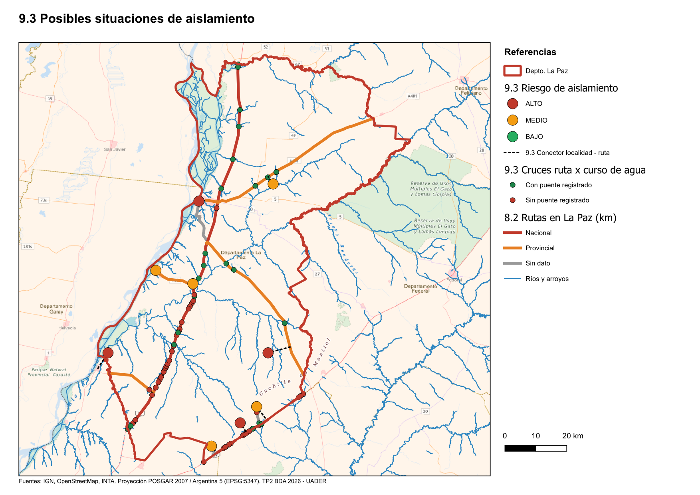
Con la ZRH completa, 17 de los 17 departamentos superan el umbral del 30 %; con la variante principal lo superan 16
(queda por debajo Feliciano). El cálculo es ST_Area(zrh)/ST_Area(depto) para cada departamento, junto con el porcentaje de
cuerpos de agua (lagunas más cauces, unidos). Lo que muestra la tabla es que el umbral del 30 % no discrimina: con un buffer de 2 km
sobre la red de drenaje de OSM, toda Entre Ríos queda «expuesta», y para priorizar haría falta un criterio más fino, como la cota, los
suelos hidromórficos o la recurrencia de crecidas. Diamante y Victoria encabezan la lista por el delta y las islas del Paraná. La Paz queda
en el puesto 14: tiene mucha agua en el borde (Paraná y Guayquiraró), pero en su interior la red de cursos mapeados es menos densa que en
el sur y el este de la provincia.
| # | Departamento | km² | % agua | % ZRH | ≥30 % | % ZRH princ. | ≥30 % princ. |
|---|---|---|---|---|---|---|---|
| 1 | Diamante | 2.689 | 5,95 | 98,70 | Sí | 76,50 | Sí |
| 2 | Victoria | 6.618 | 8,63 | 92,80 | Sí | 84,40 | Sí |
| 3 | Federación | 3.758 | 1,07 | 88,10 | Sí | 80,80 | Sí |
| 4 | Colón | 2.765 | 0,13 | 85,60 | Sí | 65,60 | Sí |
| 5 | Nogoyá | 4.379 | 0,10 | 85,40 | Sí | 67,70 | Sí |
| 6 | Concordia | 3.295 | 0,16 | 84,80 | Sí | 71,50 | Sí |
| 7 | San Salvador | 1.334 | 0,03 | 83,80 | Sí | 50,60 | Sí |
| 8 | Tala | 2.645 | 0,08 | 83,20 | Sí | 70,80 | Sí |
| 9 | Uruguay | 5.129 | 0,12 | 77,20 | Sí | 53,60 | Sí |
| 10 | Paraná | 5.105 | 2,29 | 76,40 | Sí | 55,40 | Sí |
| 11 | Gualeguay | 6.562 | 3,76 | 69,50 | Sí | 61,40 | Sí |
| 12 | Gualeguaychú | 7.540 | 0,17 | 67,50 | Sí | 48,70 | Sí |
| 13 | Islas del Ibicuy | 4.984 | 2,53 | 61,60 | Sí | 59,60 | Sí |
| 14 | La Paz | 6.643 | 2,69 | 61,40 | Sí | 40,90 | Sí |
| 15 | Villaguay | 6.577 | 0,04 | 59,30 | Sí | 42,60 | Sí |
| 16 | Federal | 5.210 | 0,26 | 56,70 | Sí | 35,60 | Sí |
| 17 | Feliciano | 3.179 | 0,82 | 51,10 | Sí | 29,50 | No |
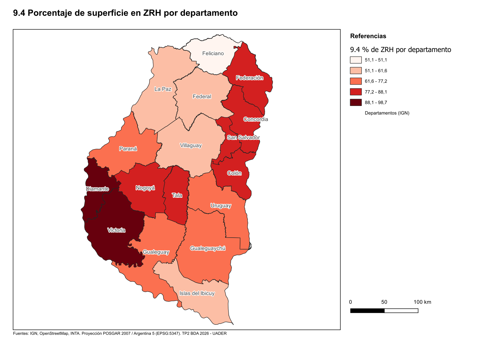
La función devuelve, para la localidad pedida, el elemento hídrico más cercano, la distancia y la clase de riesgo: Alto si está a
menos de 1 km, Medio entre 1 y 3 km y Bajo a más de 3 km. Internamente hace tres búsquedas KNN (<->), sobre ríos,
lagunas y cauces, y se queda con la menor de las tres distancias. Devuelve una fila por cada homónimo, con el departamento y el
osm_id, y la búsqueda ignora mayúsculas y tildes, así «concordia» o «Parana» también funcionan. Al aplicarla a toda la
provincia, 115 de 161 localidades quedan en riesgo Alto, lo cual es coherente con 9.4: casi todos los pueblos entrerrianos
están a menos de 1 km de algún curso de agua. La clasificación por distancia sirve como primer filtro, pero no reemplaza un análisis de cota.
CREATE OR REPLACE FUNCTION entrerios.fn_riesgo_localidad(nombre_localidad text)
RETURNS TABLE (localidad text, departamento text, osm_id text,
elemento_cercano text, tipo_elemento text, distancia_m numeric, riesgo text)
LANGUAGE sql STABLE AS $$
WITH loc AS (
SELECT l.*, d.nombre AS depto
FROM entrerios.localidades l
JOIN entrerios.departamentos d ON d.id = l.id_depto
WHERE translate(lower(l.nombre), 'áéíóúü', 'aeiouu')
= translate(lower(trim(nombre_localidad)), 'áéíóúü', 'aeiouu')
)
SELECT loc.nombre, loc.depto, loc.osm_id, h.nombre, h.tipo, round(h.dist::numeric, 0),
CASE WHEN h.dist < 1000 THEN 'Alto'
WHEN h.dist <= 3000 THEN 'Medio'
ELSE 'Bajo' END
FROM loc
CROSS JOIN LATERAL (
SELECT * FROM (
(SELECT COALESCE(r.nombre, '(sin nombre)') AS nombre, r.tipo, ST_Distance(r.geom_m, loc.geom_m) AS dist
FROM entrerios.rios r ORDER BY r.geom_m <-> loc.geom_m LIMIT 1)
UNION ALL
(SELECT COALESCE(g.nombre, '(sin nombre)'), 'laguna/' || g.tipo, ST_Distance(g.geom_m, loc.geom_m)
FROM entrerios.lagunas g ORDER BY g.geom_m <-> loc.geom_m LIMIT 1)
UNION ALL
(SELECT COALESCE(a.nombre, '(sin nombre)'), 'cauce/' || a.tipo, ST_Distance(a.geom_m, loc.geom_m)
FROM entrerios.rios_area a ORDER BY a.geom_m <-> loc.geom_m LIMIT 1)
) c ORDER BY dist LIMIT 1
) h
ORDER BY loc.depto;
$$;
SELECT * FROM entrerios.fn_riesgo_localidad('Santa Elena');| Localidad (La Paz) | Elemento más cercano | Tipo | Distancia (m) | Riesgo |
|---|---|---|---|---|
| El Quebracho | (sin nombre) | stream | 147 | Alto |
| La Paz | Arroyo Cabayú Cutiá | stream | 532 | Alto |
| Piedras Blancas | (sin nombre) | stream | 535 | Alto |
| Colonia Avigdor | (sin nombre) | laguna/pond | 585 | Alto |
| Santa Elena | (sin nombre) | cauce/river | 655 | Alto |
| San Gustavo | (sin nombre) | stream | 806 | Alto |
| Bovril | (sin nombre) | laguna/sin_tipo | 888 | Alto |
| Alcaraz | (sin nombre) | laguna/pond | 939 | Alto |
| Sir Leonard | Arroyo Macieguitas | river | 2.870 | Medio |
| Localidad | Depto. | osm_id | Elemento | Tipo | Dist. (m) | Riesgo |
|---|---|---|---|---|---|---|
| Paraná | Paraná | 198409278 | La Santiagueña | stream | 1.000 | Alto |
| Concordia | Concordia | 198445828 | Arroyo Concordia | stream | 500 | Alto |
| Villaguay | Villaguay | 198434570 | Arroyo Villaguay | river | 1.243 | Medio |
El MBR de Entre Ríos mide 120.979 km², frente a los 78.394 km² de la provincia: el territorio ocupa el
64,8 % del rectángulo (relación 1,54). Se calculó con ST_Envelope(provincia.geom)
en 4326 y el área con ::geography. El MBR es el rectángulo alineado con meridianos y paralelos definido por las coordenadas
extremas (mínimo y máximo de x e y), y es bastante más grande porque incluye superficie que no es provincia: Entre Ríos tiene forma irregular,
encajonada entre dos ríos que corren en diagonal, con el delta al sur y una punta norte angosta, así que las esquinas del rectángulo caen
sobre Santa Fe, Corrientes, Uruguay y el río. Por eso el MBR sirve como filtro rápido en los índices espaciales (el operador
&& compara MBR), pero nunca para medir.
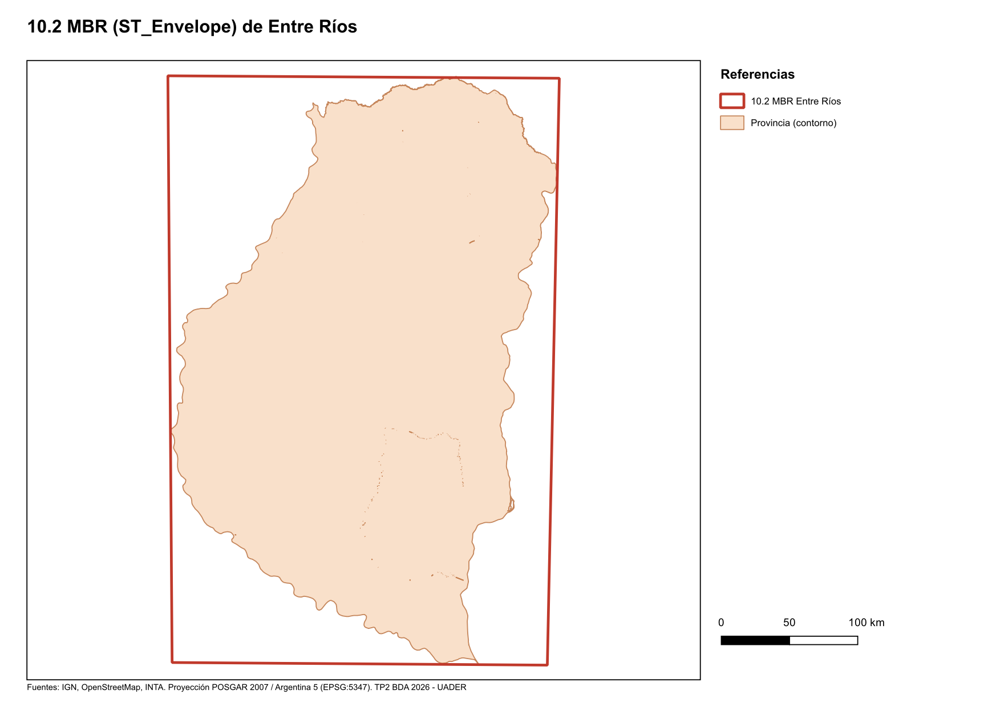
Esta función simula el pedido de auxilio de una persona que solo puede dar su posición GPS: devuelve el establecimiento más cercano,
su departamento y la distancia. Primero preselecciona 10 candidatos con KNN (rápido, en grados) y después los ordena por
ST_Distance(::geography), que es geodésica y exacta en cualquier lugar. Hay que tener cuidado con el orden de los parámetros,
porque ST_MakePoint recibe (lon, lat). Un tercer parámetro opcional permite buscar solo hospitales. En las pruebas se ve que en el
norte del departamento el hospital más cercano está a más de 30 km, y que en el centro-este el más cercano está en otro departamento
(Federal): la función lo encuentra porque busca en toda la provincia.
CREATE OR REPLACE FUNCTION entrerios.fn_hospital_cercano(lat double precision, lon double precision,
solo_hospitales boolean DEFAULT false)
RETURNS TABLE (establecimiento text, tipo text, departamento text, distancia_m numeric, distancia_km numeric)
LANGUAGE sql STABLE AS $$
WITH p AS (SELECT ST_SetSRID(ST_MakePoint(lon, lat), 4326) AS g),
cand AS (SELECT s.nombre, s.tipo, s.id_depto, s.geom FROM entrerios.salud s, p
WHERE NOT solo_hospitales OR s.tipo = 'hospital'
ORDER BY s.geom <-> p.g LIMIT 10)
SELECT c.nombre, c.tipo, d.nombre,
round(ST_Distance(c.geom::geography, p.g::geography)::numeric, 0),
round((ST_Distance(c.geom::geography, p.g::geography)/1000)::numeric, 2)
FROM cand c, p, entrerios.departamentos d WHERE d.id = c.id_depto
ORDER BY ST_Distance(c.geom::geography, p.g::geography) LIMIT 1;
$$;| Caso | Establecimiento | Tipo | Depto. | m | km |
|---|---|---|---|---|---|
| Plaza de La Paz (-30.7423, -59.6455) | Centro De Dialisis Instituto De Nefrologia De Entre Rios Siglo XXI | clinic | La Paz | 95 | 0,09 |
| Campo entre Bovril y Alcaraz (-31.10, -59.30) | Hospital Crispin Velázquez | hospital | Federal | 17.227 | 17,23 |
| Norte, cerca del Guayquiraró (-30.40, -59.40) | Hospital Gregoria Perez | hospital | La Paz | 31.785 | 31,79 |
| Mismo punto, solo hospitales | Hospital Gregoria Perez | hospital | La Paz | 31.785 | 31,79 |
Con ST_ClusterKMeans(geom_m, 3) OVER (), que es una función de ventana aplicada en coordenadas métricas, agrupamos los
establecimientos en tres grupos y calculamos el centroide de cada uno con ST_Centroid(ST_Collect(...)). Los grupos coinciden
con los tres polos sanitarios del departamento: La Paz (ciudad) al noroeste, Santa Elena–El Quebracho–Piedras Blancas al oeste y
Bovril–Alcaraz al sudeste. Los centroides marcan el centro de gravedad de cada polo y son lugares razonables para una base de
ambulancias o un depósito de medicamentos que abastezca a todo el grupo. El de Bovril–Alcaraz cae en el campo, cerca de Sir Leonard, una
de las localidades sin cobertura, así que una base ahí acercaría el servicio a quienes hoy no lo tienen. La limitación es que el centroide
es geométrico y no considera la red vial; eso lo resuelven los puntos 13 y 14.
| Grupo | N | Lat | Lon | Integrantes |
|---|---|---|---|---|
| 1 | 4 | -31,37 | -59,48 | Clínica Bovril | Clínica del Sol | Hospital Ecuador | Hospital San Miguel |
| 2 | 7 | -30,73 | -59,61 | Alianza Médica | Centro De Dialisis Instituto De Nefrologia De Entre Rios Siglo XXI | Consultorio Medico Centro Medico Lawrie | Consultorio Medico Dm Diagnostico Medico | Hospital Gregoria Perez | Hospital Zonal 9 de Julio | Mayo |
| 3 | 4 | -31,01 | -59,80 | Centro de Salud | Centro de Salud | Centro de Salud Materno Infantil | Hospital Santa Elena |
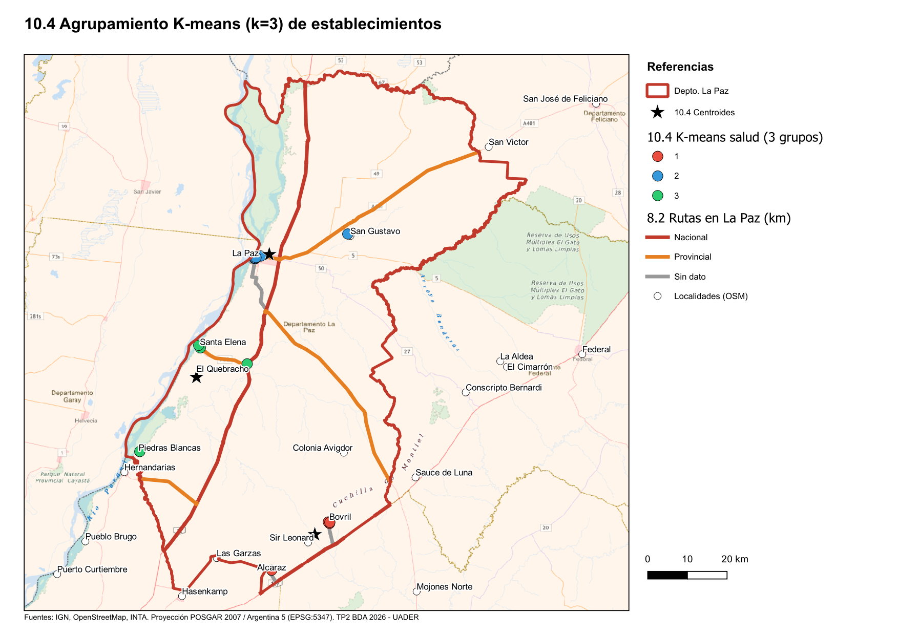
La Paz suma 2.744,3 km de calles, un 24,5 % más que el promedio provincial
(2.204,5 km). Su densidad, en cambio, es de 0,413 km/km², por debajo del promedio (0,522).
El cálculo es ST_Length de las calles recortadas a cada departamento, dividido por su superficie. La comparación por longitud
total engaña: La Paz tiene muchos kilómetros simplemente porque es grande. Por km² está en el puesto 12 de 17, lo que refleja una red
rural rala, donde el 74 % son caminos unclassified, casi todos de tierra.
| Departamento | km de calles | km² | km/km² |
|---|---|---|---|
| Paraná | 5.000,3 | 5.105 | 0,98 |
| Gualeguaychú | 3.165,1 | 7.540 | 0,42 |
| Uruguay | 3.113,6 | 5.129 | 0,61 |
| Villaguay | 2.864,6 | 6.577 | 0,44 |
| La Paz | 2.744,3 | 6.643 | 0,41 |
| Nogoyá | 2.500,8 | 4.379 | 0,57 |
| Concordia | 2.438,1 | 3.295 | 0,74 |
| Colón | 2.378 | 2.765 | 0,86 |
| Federación | 2.338,7 | 3.758 | 0,62 |
| Diamante | 1.894,1 | 2.689 | 0,70 |
| Federal | 1.795,6 | 5.210 | 0,34 |
| Gualeguay | 1.552,1 | 6.562 | 0,24 |
| Tala | 1.445,1 | 2.645 | 0,55 |
| Victoria | 1.206,4 | 6.618 | 0,18 |
| Islas del Ibicuy | 1.096,3 | 4.984 | 0,22 |
| Feliciano | 1.079,1 | 3.179 | 0,34 |
| San Salvador | 865,1 | 1.334 | 0,65 |
La mayor densidad vial por localidad es la de Alcaraz: 17,88 km/km² (21,26 km en
1,189 km²). Acá hubo que tomar una decisión, porque las localidades de OSM son puntos y los ejidos (admin_level 7/8)
incluyen grandes áreas rurales, así que ninguna de las dos cosas sirve como «superficie de la localidad». Estimamos la mancha urbana
a partir de la propia trama de calles: ST_ClusterDBSCAN (eps 100 m, minpoints 5) sobre las calles residential,
asignación de cada cluster a la localidad más cercana (a menos de 1,5 km) y superficie = ST_Buffer(ST_ConcaveHull(cluster, 0.4), 50).
En un primer intento incluimos también las unclassified, pero DBSCAN encadenaba los caminos rurales y la «mancha» de La Paz daba
862 km². La densidad es los km de calles de todas las categorías dentro de la mancha, sobre su superficie. Las localidades chicas y
compactas como Alcaraz, Sir Leonard o San Gustavo, con damero denso y pocas manzanas, tienen más densidad que la ciudad de La Paz, cuya
mancha incluye barrios periféricos, quintas y la barranca, con una trama más abierta.
| Localidad | Población | Mancha (km²) | km calles | km/km² |
|---|---|---|---|---|
| Alcaraz | 2.578 | 1,19 | 21,26 | 17,88 |
| Sir Leonard | 281 | 0,89 | 12,50 | 14,12 |
| San Gustavo | 2.000 | 2,69 | 36,08 | 13,41 |
| Piedras Blancas | 1.767 | 1,44 | 18,02 | 12,52 |
| Bovril | 8.790 | 3,99 | 46,12 | 11,55 |
| Santa Elena | 5.000 | 8,76 | 80,10 | 9,15 |
| La Paz | 24.716 | 18,60 | 168,0 | 9,03 |
| Colonia Avigdor | 692 | 1,21 | 6,71 | 5,55 |
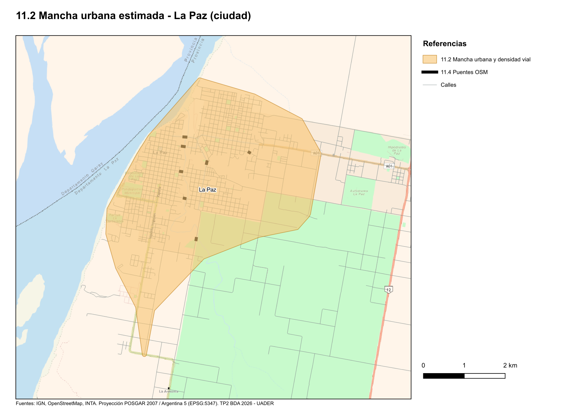
Los kilómetros de calles primary y secondary dentro del departamento se obtienen filtrando por highway y
midiendo ST_Length(ST_Intersection(...)), con GROUP BY ROLLUP para el total. Coinciden con la red de rutas del
punto 8 (la RN127 y la RP1 son primary, la RP6 es secondary): en OSM las rutas son también «calles» de categoría alta.
| Categoría | Tramos | km |
|---|---|---|
| primary | 38 | 93,29 |
| secondary | 61 | 102,8 |
| Total | 99 | 196,0 |
Para comparar OSM con Argenmap superpusimos en QGIS las calles cargadas en PostGIS sobre el mapa base del IGN (servido como XYZ con
{-y}) y complementamos la vista con consultas sobre los tags bridge y surface: hay 75
puentes cargados en OSM, que suman 2.434 m, y la superficie declarada de las vías se resume en la tabla de más abajo.
En la planta urbana de La Paz (Figura 13) la trama de calles de OSM se superpone casi exactamente con las manzanas de Argenmap. En la
periferia y el campo, en cambio, OSM agrega la cuadrícula de caminos vecinales entre chacras, al sur y al este de la ciudad, que en Argenmap
no aparece o aparece con menor jerarquía. En cuanto a la ubicación de las vías, en la RN12, la avenida de acceso (A01) y las calles del
centro las diferencias son de pocos metros y no se distinguen a esta escala. En los sectores rurales la información de transitabilidad de
OSM es incompleta: el 73 % de los km figura como unpaved y el 19 % no tiene dato de superficie. Los arroyos urbanos (Cabayú Cutiá,
Los Paraísos) están en las dos fuentes, pero en OSM son líneas con nombre, y eso es justamente lo que permite calcular cruces y distancias
en PostGIS. Los puentes en OSM se modelan como un tramo con bridge=yes: en la ciudad se ven los de las calles sobre los arroyos
urbanos, y en el campo los de la RP6 sobre el Feliciano y la RP5 sobre el Estacas. Sobre la RN12, en cambio, 29 de los 44 cruces con
cursos de agua no tienen puente cargado (9.3), y queda pendiente contrastarlos uno por uno con Argenmap.
Las diferencias se explican porque son fuentes con objetivos y procesos distintos. Argenmap es cartografía oficial, generalizada para una escala y actualizada por relevamiento institucional; OSM es colaborativo, más detallado donde hubo mapeadores y desparejo donde no los hubo. Ninguna es «mejor» que la otra: OSM aporta detalle rural y atributos consultables, y Argenmap homogeneidad y respaldo oficial.
| Superficie (OSM) | km |
|---|---|
| no pavimentada | 2.030,1 |
| sin dato | 516,5 |
| pavimentada | 197,7 |
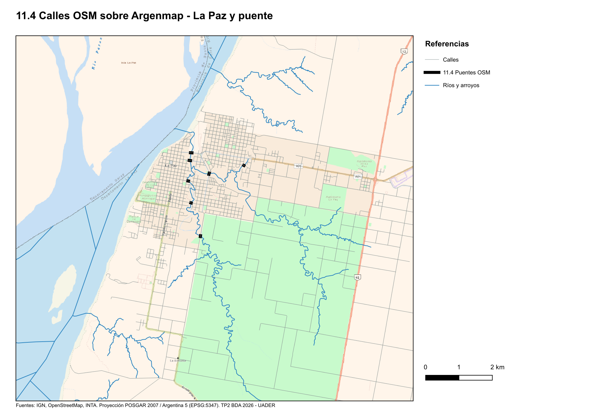
La capa usada es la Carta de Suelos de Entre Ríos 1:100.000 (WFS INTA geo-nodo03), almacenada como entrerios.suelo.
Describe la aptitud del suelo y no su uso actual, así que adoptamos una clasificación a partir del Índice de Productividad (IPC):
| Clase | Criterio | Interpretación |
|---|---|---|
| Agrícola | IPC ≥ 30 | Suelos aptos para cultivos (argiudoles de lomas) |
| Agrícola-ganadera | 20 ≤ IPC < 30 | Cultivos con limitaciones, rotación con ganadería |
| Ganadera | 1 ≤ IPC < 20 | Limitaciones severas (vertisoles, hidromorfismo, sodicidad) |
| Planicie inundable / agua | IPC = 0 y unidad Ar, AIB, CR, CAg | Arroyos, islas y bañados, cárcavas, cuerpos de agua |
| Urbana | IPC = 0 y unidad AU | Ejidos urbanos (la carta también les asigna IPC 0) |
El 20,0 % del departamento tiene aptitud agrícola y el 80,0 % corresponde a otros
usos. El resultado es sensible al umbral: con IPC ≥ 20 sería 53,1 % y con IPC ≥ 40, 11,5 %. Los valores
salen de intersectar las unidades de suelo con el departamento y sumar ST_Area por clase. La Paz es mayormente ganadera y
mixta: los vertisoles y los suelos con drenaje deficiente dominan el centro y el norte, y la agricultura se concentra en las lomas del sur
y sudeste (series Tacuaras, Alcaraz, Banderas, Malambo), alrededor de Bovril y Alcaraz.
| Clase | km² | % del depto. |
|---|---|---|
| Ganadera | 2.521,1 | 38 |
| Agrícola-ganadera | 2.192,4 | 33 |
| Agrícola | 1.317,8 | 19,80 |
| Planicie inundable / agua | 553,6 | 8,30 |
| Urbana | 17,10 | 0,30 |
| Misceláneas | 3 | 0 |
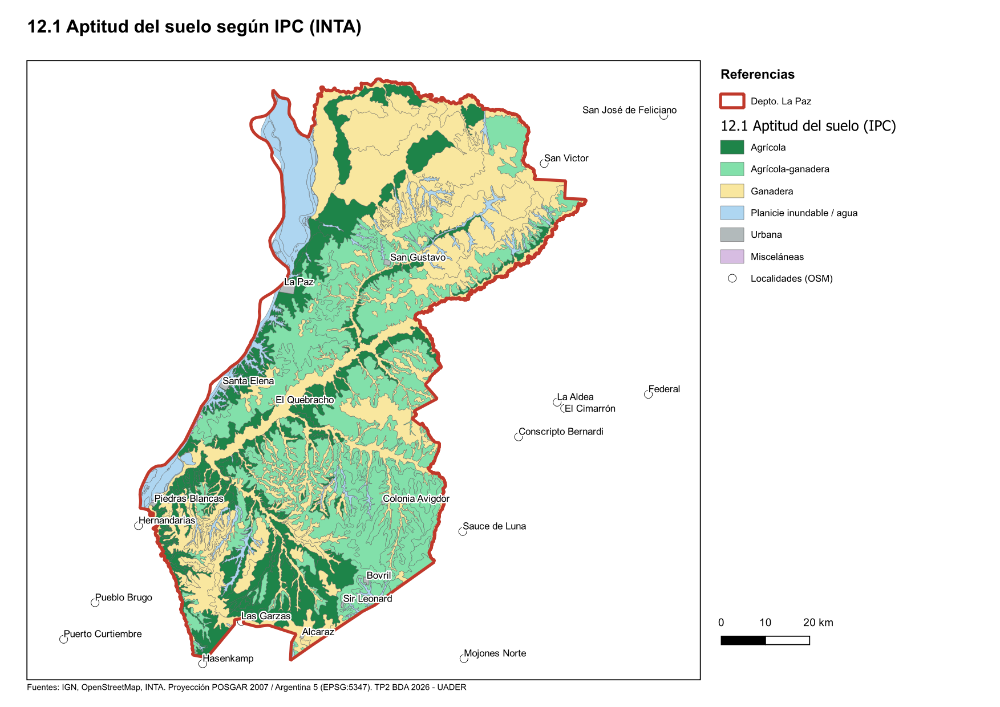
905,7 km² de suelo agrícola están dentro de la ZRH, el 68,7 % del área agrícola, calculados con
ST_Intersection(suelo_agricola.geom_m, zrh.geom_m). Más de dos tercios de la mejor tierra está a menos de 2 km de un curso de
agua, porque en las lomas agrícolas la red de arroyos es densa. Es una primera aproximación: el suelo agrícola suele estar en las partes
altas, así que la exposición real es menor que la geométrica. Las unidades con más superficie expuesta son Tacuaras (IPC 62, la mejor del
departamento), Malambo y Banderas.
| Unidad | IPC | km² expuestos |
|---|---|---|
| Tacuaras | 62 | 214,7 |
| Malambo | 45 | 118,6 |
| Banderas | 46 | 115,1 |
| Alcaráz | 31 | 105,5 |
| Colonia Once | 31 | 105,5 |
| Puerto Algarrobo | 38 | 74,80 |
| Arroyo Carrasco | 33 | 41 |
| Asociación Tacuaras II | 52 | 33,70 |
Para los corredores productivos calculamos, por ruta, los km que atraviesan suelo agrícola
(ST_Intersection(ruta, ST_Union(agricola))) y la superficie agrícola a menos de 2 km
(ST_Intersection(ST_Buffer(ruta, 2000), agricola)). La RN12 es el corredor principal: 40 km sobre suelo agrícola y 151 km²
de producción con salida directa; es la ruta que saca la producción del sur del departamento (Bovril–Alcaraz) hacia Paraná. La RPA02 y
la RPA01 son corredores cortos pero intensos, mientras que la RP1 y la RN127 casi no atraviesan suelo agrícola. Esto se conecta con el
punto 13: los cortes de la RN127 y la RN12 por crecida afectan justamente al corredor productivo del sur.
| Ruta | Jurisdicción | km ruta | km en agrícola | % | Corredor 2 km (km²) |
|---|---|---|---|---|---|
| RN12 | Nacional | 128,4 | 40,30 | 31,40 | 151,5 |
| RPA02 | Provincial | 13,42 | 4,20 | 31,10 | 16,30 |
| RP6 | Provincial | 55,40 | 3,30 | 6 | 14,30 |
| RPA01 | Provincial | 3,79 | 2,40 | 64,40 | 11,20 |
| RPA03 | Provincial | 16,70 | 1,80 | 10,70 | 15,80 |
| RP1 | Provincial | 58,16 | 0 | 0 | 4,50 |
| RN127 | Nacional | 17,92 | 0 | 0 | 2,30 |
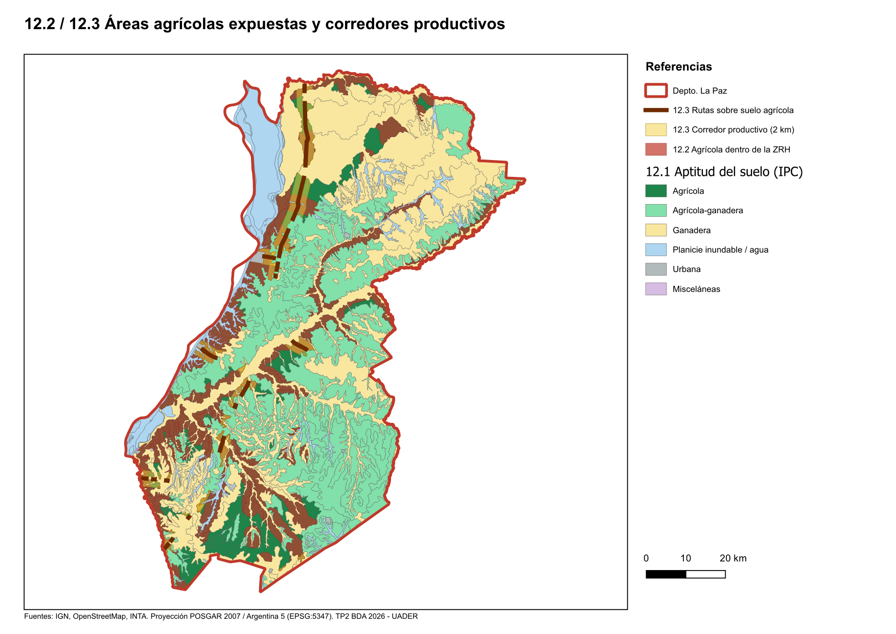
Una crecida de los ríos y arroyos deja intransitables los cruces de agua sin puente (vados y alcantarillas) y los caminos que atraviesan las planicies de inundación. ¿Qué localidades pierden el acceso por ruta al hospital, cuánto se alarga el viaje, cuál es el camino alternativo y en qué orden hay que asistirlas?
| Información | Fuente | Uso |
|---|---|---|
| Red vial (calles + rutas) | OSM | grafo ruteable con pgRouting |
| Ríos y arroyos; ZRH principal | OSM (punto 9) | cruces de agua; zona de influencia |
| Unidades de suelo de planicie inundable | INTA | terreno bajo que se anega primero |
| Departamentos | IGN | área de estudio (La Paz + 30 km) |
| Hospitales, localidades y población | OSM | orígenes, destinos y prioridad |
El grafo se armó con las vías transitables en un radio de 30 km alrededor de La Paz, para incluir los hospitales de los departamentos
vecinos. En OSM las vías se conectan compartiendo nodos, que pueden estar en el medio de un way, así que partimos cada way en sus
segmentos elementales con ST_DumpSegments, de modo que cada nodo sea un vértice. Los vértices se obtuvieron con
pgr_extractVertices, que en pgRouting 4 reemplaza a pgr_createTopology y devuelve, por vértice, las aristas que salen
(out_edges) y las que llegan (in_edges); con eso asignamos source y target sin comparar
geometrías. El costo es el tiempo de viaje en minutos según la categoría de la vía (90 km/h troncales, 80 primarias, 60 secundarias,
50 terciarias, 40 vecinales, 30 urbanas). El grafo quedó con 51.391 aristas y 8.762 km.
-- 13.1 Grafo ruteable: La Paz + 30 km, cada way partido en segmentos
CREATE TABLE entrerios.red_vial AS
WITH area AS (
SELECT ST_Transform(ST_Buffer(ST_Simplify(geom_m, 200), 30000), 4326) AS g
FROM entrerios.departamentos WHERE nombre = 'La Paz'
), vias AS (
SELECT l.osm_id, l.name, l.ref, l.highway,
COALESCE(l.bridge, 'no') <> 'no' AS puente,
ST_Transform(l.geom, 5347) AS g
FROM fuentes.osm_lines l, area
WHERE l.highway IN ('motorway', 'motorway_link', 'trunk', 'trunk_link', 'primary', 'primary_link',
'secondary', 'secondary_link', 'tertiary', 'tertiary_link',
'unclassified', 'residential')
AND l.geom && area.g AND ST_Intersects(l.geom, area.g)
)
SELECT row_number() OVER ()::bigint AS id,
v.osm_id, v.name, v.ref, v.highway, v.puente,
CASE WHEN v.highway LIKE 'motorway%' OR v.highway LIKE 'trunk%' THEN 90
WHEN v.highway LIKE 'primary%' THEN 80
WHEN v.highway LIKE 'secondary%' THEN 60
WHEN v.highway LIKE 'tertiary%' THEN 50
WHEN v.highway = 'unclassified' THEN 40
ELSE 30 END AS vel_kmh,
s.geom::geometry(LineString, 5347) AS geom_m
FROM vias v
CROSS JOIN LATERAL ST_DumpSegments(v.g) s;
ALTER TABLE entrerios.red_vial
ADD COLUMN largo_m double precision, ADD COLUMN costo_min double precision,
ADD COLUMN source bigint, ADD COLUMN target bigint, ADD COLUMN cortado boolean DEFAULT false;
UPDATE entrerios.red_vial SET largo_m = ST_Length(geom_m),
costo_min = ST_Length(geom_m) / 1000.0 / vel_kmh * 60;
-- Vértices (pgRouting 4: pgr_extractVertices reemplaza a pgr_createTopology)
CREATE TABLE entrerios.red_vial_vertices AS
SELECT * FROM pgr_extractVertices('SELECT id, geom_m AS geom FROM entrerios.red_vial');
UPDATE entrerios.red_vial e SET source = v.id
FROM (SELECT id, unnest(out_edges) AS eid FROM entrerios.red_vial_vertices) v WHERE v.eid = e.id;
UPDATE entrerios.red_vial e SET target = v.id
FROM (SELECT id, unnest(in_edges) AS eid FROM entrerios.red_vial_vertices) v WHERE v.eid = e.id;
CREATE INDEX ON entrerios.red_vial (source);
CREATE INDEX ON entrerios.red_vial (target);
CREATE INDEX ON entrerios.red_vial USING gist (geom_m);
CREATE INDEX ON entrerios.red_vial_vertices USING gist (geom);Un tramo se considera cortado cuando no es un puente según OSM y, o bien cruza un río o arroyo (o sea que es un vado o una alcantarilla), o bien está dentro de la ZRH principal sobre una unidad del INTA de planicie inundable. Con ese criterio se cortan 339,3 km (3,9 % de la red), entre ellos tramos de la RN127, la RN12, la RP8 y la RP10.
-- 13.2 (a) cruces de agua sin puente
UPDATE entrerios.red_vial e SET cortado = true
WHERE NOT e.puente
AND EXISTS (SELECT 1 FROM entrerios.rios r WHERE ST_Intersects(r.geom_m, e.geom_m));
-- 13.2 (b) planicie inundable (INTA) dentro de la ZRH principal
CREATE TEMP TABLE tmp_planicie AS
SELECT (ST_Dump(ST_Intersection(s.geom_m, z.geom_m_principal))).geom AS g
FROM entrerios.suelo s
JOIN entrerios.zona_riesgo_hidrico z ON ST_Intersects(s.geom_m, z.geom_m_principal)
WHERE s.clase = 'Planicie inundable / agua'
AND ST_DWithin(s.geom_m, (SELECT geom_m FROM entrerios.departamentos WHERE nombre = 'La Paz'), 30000);
CREATE INDEX ON tmp_planicie USING gist (g);
UPDATE entrerios.red_vial e SET cortado = true
WHERE NOT e.cortado AND NOT e.puente
AND EXISTS (SELECT 1 FROM tmp_planicie p WHERE ST_Intersects(p.g, e.geom_m));Cada localidad y cada hospital se «enganchan» al vértice más cercano del grafo con KNN. Con pgr_dijkstraCost (muchos a
muchos) calculamos el tiempo mínimo desde cada localidad a cada hospital, en situación normal y sobre la red sin los tramos cortados, y nos
quedamos con el menor por localidad. El mismo esquema se repite contra el Hospital Zonal 9 de Julio, que es el de referencia del
departamento, para medir la derivación:
-- 13.5 Derivación al hospital de referencia: tiempo normal vs. crecida
CREATE TEMP TABLE tmp_zonal AS
SELECT l.id, l.nombre, COALESCE(l.poblacion, 0) AS poblacion,
(SELECT v.id FROM entrerios.red_vial_vertices v ORDER BY v.geom <-> l.geom_m LIMIT 1) AS vid
FROM entrerios.localidades l
JOIN entrerios.departamentos d ON d.id = l.id_depto AND d.nombre = 'La Paz';
CREATE TEMP TABLE tmp_zonal_h AS
SELECT (SELECT v.id FROM entrerios.red_vial_vertices v ORDER BY v.geom <-> s.geom_m LIMIT 1) AS vid
FROM entrerios.salud s WHERE s.nombre = 'Hospital Zonal 9 de Julio';
CREATE TABLE entrerios.r13_derivacion_zonal AS
WITH n AS (
SELECT * FROM pgr_dijkstraCost(
'SELECT id, source, target, costo_min AS cost, costo_min AS reverse_cost FROM entrerios.red_vial',
(SELECT array_agg(DISTINCT vid) FROM tmp_zonal), (SELECT vid FROM tmp_zonal_h))
), c AS (
SELECT * FROM pgr_dijkstraCost(
'SELECT id, source, target, costo_min AS cost, costo_min AS reverse_cost FROM entrerios.red_vial WHERE NOT cortado',
(SELECT array_agg(DISTINCT vid) FROM tmp_zonal), (SELECT vid FROM tmp_zonal_h))
)
SELECT z.id, z.nombre AS localidad, z.poblacion,
round(n.agg_cost::numeric, 1) AS min_normal,
round(c.agg_cost::numeric, 1) AS min_crecida,
round((c.agg_cost - n.agg_cost)::numeric, 1) AS demora_extra_min,
round((100 * (c.agg_cost / NULLIF(n.agg_cost, 0) - 1))::numeric, 0) AS pct_extra,
CASE WHEN c.agg_cost IS NULL THEN 'AISLADA'
WHEN c.agg_cost - n.agg_cost >= 15 THEN 'Demora crítica (>= 15 min)'
WHEN c.agg_cost - n.agg_cost >= 5 THEN 'Demora moderada (5-15 min)'
ELSE 'Sin afectación relevante' END AS situacion,
l.geom
FROM tmp_zonal z
JOIN entrerios.localidades l ON l.id = z.id
LEFT JOIN n ON n.start_vid = z.vid
LEFT JOIN c ON c.start_vid = z.vid;
-- Ruta normal y ruta alternativa de cada localidad afectada (pgr_dijkstra), para dibujarlas en QGIS
DO $$
DECLARE r record; esc text; filtro text; hv bigint;
BEGIN
SELECT vid INTO hv FROM tmp_zonal_h;
FOR r IN SELECT d.*, z.vid FROM entrerios.r13_derivacion_zonal d JOIN tmp_zonal z ON z.id = d.id
WHERE d.situacion <> 'Sin afectación relevante' AND d.min_crecida IS NOT NULL LOOP
FOREACH esc IN ARRAY ARRAY['normal', 'crecida'] LOOP
filtro := CASE WHEN esc = 'normal' THEN '' ELSE ' WHERE NOT cortado' END;
INSERT INTO entrerios.r13_rutas_hospital
SELECT r.localidad, esc, 'Hospital Zonal 9 de Julio (derivación)',
round(max(p.agg_cost)::numeric, 1), round((sum(e.largo_m) / 1000)::numeric, 1),
ST_Multi(ST_Transform(ST_LineMerge(ST_Collect(e.geom_m)), 4326))
FROM pgr_dijkstra('SELECT id, source, target, costo_min AS cost, costo_min AS reverse_cost '
'FROM entrerios.red_vial' || filtro, r.vid, hv) p
JOIN entrerios.red_vial e ON e.id = p.edge;
END LOOP;
END LOOP;
END $$;La primera tabla mira el establecimiento más cercano de cada localidad, sin distinguir complejidad. Ahí la crecida casi no cambia
nada, porque casi cada pueblo tiene una sala o una clínica local: para La Paz el más cercano es Alianza Médica, para Piedras Blancas el
Centro de Salud, y así. Conviene aclarar que OSM los etiqueta como hospital, pero son centros de atención primaria, sin
internación compleja. La única localidad que cambia de establecimiento es Sir Leonard, que pasa del Hospital San Miguel (Bovril) al
Hospital Ecuador (Alcaraz).
| Localidad | Pobl. | Establecimiento (normal) | min | Establecimiento (crecida) | min | +min | Situación |
|---|---|---|---|---|---|---|---|
| Sir Leonard | 281 | Hospital San Miguel | 13,50 | Hospital Ecuador | 21,80 | 8,30 | Debe derivarse a otro hospital |
| Colonia Avigdor | 692 | Hospital Crispin Velázquez | 32,40 | Hospital Crispin Velázquez | 36 | 3,60 | Sin afectación relevante |
| Santa Elena | 5.000 | Hospital Santa Elena | 1,20 | Hospital Santa Elena | 1,20 | 0 | Sin afectación relevante |
| Alcaraz | 2.578 | Hospital Ecuador | 2,20 | Hospital Ecuador | 2,20 | 0 | Sin afectación relevante |
| La Paz | 24.716 | Alianza Médica | 0,60 | Alianza Médica | 0,60 | 0 | Sin afectación relevante |
| Bovril | 8.790 | Hospital San Miguel | 0,80 | Hospital San Miguel | 0,80 | 0 | Sin afectación relevante |
| Piedras Blancas | 1.767 | Centro de Salud | 1 | Centro de Salud | 1 | 0 | Sin afectación relevante |
| El Quebracho | 0 | Hospital Santa Elena | 11,50 | Hospital Santa Elena | 11,50 | 0 | Sin afectación relevante |
| San Gustavo | 2.000 | Hospital Gregoria Perez | 1,60 | Hospital Gregoria Perez | 1,60 | 0 | Sin afectación relevante |
En una emergencia hídrica real, sin embargo, esos centros no resuelven una internación compleja ni una cirugía: los casos graves se derivan al Hospital Zonal 9 de Julio, en la ciudad de La Paz. Por eso la segunda tabla mide el tiempo de derivación a la cabecera, y ahí sí aparece el impacto de la crecida:
| Prioridad | Localidad | Pobl. | min normal | min crecida | +min | +% | Situación |
|---|---|---|---|---|---|---|---|
| 1 | Piedras Blancas | 1.767 | 73,50 | AISLADA | |||
| 2 | Alcaraz | 2.578 | 98 | 181,4 | 83,50 | 85 | Demora crítica (>= 15 min) |
| 3 | Bovril | 8.790 | 92,80 | 101,1 | 8,30 | 9 | Demora moderada (5-15 min) |
| 4 | Sir Leonard | 281 | 93,30 | 185,1 | 91,80 | 98 | Demora crítica (>= 15 min) |
| 5 | Santa Elena | 5.000 | 33,50 | 37,10 | 3,60 | 11 | Sin afectación relevante |
| 6 | Colonia Avigdor | 692 | 68,60 | 75,80 | 7,10 | 10 | Demora moderada (5-15 min) |
| 7 | La Paz | 24.716 | 2,90 | 2,90 | 0 | 0 | Sin afectación relevante |
| 7 | San Gustavo | 2.000 | 21,10 | 21,10 | 0 | 0 | Sin afectación relevante |
| 7 | El Quebracho | 0 | 23 | 26,60 | 3,60 | 16 | Sin afectación relevante |
| Localidad | Escenario | min | km |
|---|---|---|---|
| Alcaraz | normal | 97,90 | 104,5 |
| Alcaraz | crecida | 181,4 | 159,6 |
| Bovril | normal | 92,70 | 98,80 |
| Bovril | crecida | 101 | 92,70 |
| Colonia Avigdor | normal | 68,50 | 72,10 |
| Colonia Avigdor | crecida | 75,70 | 75,80 |
| Sir Leonard | normal | 93,20 | 89,90 |
| Sir Leonard | crecida | 185 | 161,8 |
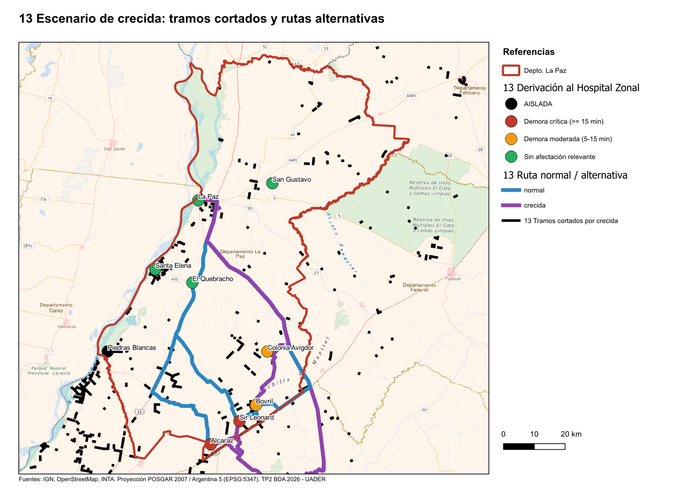
Hay que elegir uno o más sitios en el departamento La Paz para un Centro de Atención Sanitaria de Emergencia (CASE) que funcione justamente durante una crecida: fuera de zonas inundables y de cuerpos de agua, cerca de una ruta principal, sin ocupar los mejores suelos agrícolas, con superficie suficiente y en una posición que mejore el acceso de las localidades peor servidas y atienda a varias localidades.
| Condición de la consigna | Criterio adoptado | Tipo |
|---|---|---|
| Fuera de la Zona de Riesgo Hídrico | Fuera de la ZRH principal (ríos, lagunas, cauces). La ZRH completa cubre el 61 % y a los 15 establecimientos: como restricción dura dejaba sin territorio útil, por eso se usa como penalización | Excluyente + puntaje (15 %) |
| No dentro de cuerpos de agua | Se restan lagunas y cauces | Excluyente |
| Fuera de determinadas áreas agrícolas | Fuera de los suelos de mayor aptitud (IPC ≥ 40) | Excluyente |
| Superficie adecuada | Parche libre continuo ≥ 0,5 km² (50 ha: edificio, helipuerto, playa logística, ampliación) | Excluyente |
| Próximo a una ruta principal | ≤ 3 km de una RN o RP; más cerca, más puntaje | Excluyente + puntaje (15 %) |
| Atender localidades con menor accesibilidad | Σ población × minutos ahorrados respecto del hospital más cercano actual, en escenario de crecida | Puntaje (45 %) |
| Atender varias localidades / accesibilidad razonable | Cantidad de localidades a ≤ 45 min por la red vial en crecida | Puntaje (25 %) |
Departamentos (IGN), ZRH y ZRH principal (punto 9), lagunas y cauces (OSM), suelo e IPC (INTA), rutas y red vial ruteable con tramos cortados (OSM + punto 13), localidades con población (OSM) y tiempos actuales al hospital (punto 13).
ST_HexagonGrid: genera una grilla hexagonal sobre el departamento. Elegimos hexágonos y no cuadrados porque todas las celdas vecinas quedan a la misma distancia.ST_Difference / ST_Union: restan del hexágono las áreas excluidas.ST_Dump + ST_Area: separan el área libre en parches, para quedarse con el mayor parche continuo (no alcanza con 50 ha dispersas).ST_PointOnSurface: el sitio concreto, garantizado dentro del parche libre (el centroide podría caer afuera).ST_DWithin, ST_Distance, operador KNN <->: proximidad a rutas y localidades.pgr_dijkstraCost (muchos a muchos): tiempos por red vial desde cada sitio a cada localidad, en escenario de crecida.-- 14.1 Grilla hexagonal (750 m de lado) dentro del departamento
CREATE TABLE entrerios.r14_grilla AS
SELECT row_number() OVER () AS id, h.geom::geometry(Polygon, 5347) AS geom_m
FROM entrerios.departamentos d
CROSS JOIN LATERAL ST_HexagonGrid(750, d.geom_m) h
WHERE d.nombre = 'La Paz' AND ST_Within(h.geom, d.geom_m);
CREATE INDEX ON entrerios.r14_grilla USING gist (geom_m);
-- 14.2 Restricciones excluyentes: ZRH principal (E1) + lagunas y cauces (E2) + suelo IPC >= 40 (E3)
CREATE TEMP TABLE tmp_restriccion AS
SELECT ST_Union(g) AS g FROM (
SELECT geom_m_principal AS g FROM entrerios.zona_riesgo_hidrico WHERE depto = 'La Paz'
UNION ALL
SELECT ST_Buffer(geom_m, 0) FROM entrerios.lagunas l
WHERE ST_Intersects(l.geom_m, (SELECT geom_m FROM entrerios.departamentos WHERE nombre = 'La Paz'))
UNION ALL
SELECT geom_m FROM entrerios.rios_area a
WHERE ST_Intersects(a.geom_m, (SELECT geom_m FROM entrerios.departamentos WHERE nombre = 'La Paz'))
UNION ALL
SELECT geom_m FROM entrerios.r12_suelo_lapaz WHERE ipc >= 40
) x;
-- Celdas aptas: mayor parche libre continuo >= 0,5 km² (E4) y a <= 3 km de una RN/RP (E5)
CREATE TABLE entrerios.r14_aptas AS
WITH libre AS (
SELECT g.id, g.geom_m,
ST_Difference(g.geom_m, COALESCE(ST_Intersection(r.g, g.geom_m), 'POLYGON EMPTY'::geometry)) AS libre
FROM entrerios.r14_grilla g, tmp_restriccion r
), mayor_parche AS (
SELECT DISTINCT ON (l.id) l.id, l.geom_m, p.geom AS parche, ST_Area(p.geom) AS area_parche
FROM libre l CROSS JOIN LATERAL ST_Dump(ST_CollectionExtract(l.libre, 3)) p
ORDER BY l.id, ST_Area(p.geom) DESC
)
SELECT m.id, m.geom_m, m.parche, round((m.area_parche / 1e6)::numeric, 3) AS libre_km2,
ST_PointOnSurface(m.parche) AS sitio_m,
rt.ref AS ruta, rt.dist AS dist_ruta_m
FROM mayor_parche m
CROSS JOIN LATERAL (
SELECT r.ref, ST_Distance(r.geom_m, m.parche) AS dist
FROM entrerios.rutas r WHERE r.jurisdiccion IN ('Nacional', 'Provincial')
ORDER BY r.geom_m <-> m.parche LIMIT 1
) rt
WHERE m.area_parche >= 500000
AND rt.dist <= 3000;
-- 14.3 Tiempos por red vial en crecida desde cada sitio apto a cada localidad
CREATE TEMP TABLE tmp_vsitio AS
SELECT a.id, v.id AS vid
FROM entrerios.r14_aptas a
CROSS JOIN LATERAL (SELECT id FROM entrerios.red_vial_vertices ORDER BY geom <-> a.sitio_m LIMIT 1) v;
CREATE TEMP TABLE tmp_vloc AS
SELECT i.id, i.localidad, GREATEST(i.poblacion, 100) AS poblacion, -- sin dato OSM -> 100 hab.
COALESCE(i.min_crecida, 180) AS min_actual, v.id AS vid -- aislada -> 180 min
FROM entrerios.r13_impacto_crecida i
JOIN entrerios.localidades l ON l.id = i.id
CROSS JOIN LATERAL (SELECT id FROM entrerios.red_vial_vertices ORDER BY geom <-> l.geom_m LIMIT 1) v;
CREATE TEMP TABLE tmp_tiempos AS
SELECT * FROM pgr_dijkstraCost(
'SELECT id, source, target, costo_min AS cost, costo_min AS reverse_cost FROM entrerios.red_vial WHERE NOT cortado',
(SELECT array_agg(DISTINCT vid) FROM tmp_vsitio),
(SELECT array_agg(DISTINCT vid) FROM tmp_vloc));
-- 14.4 Puntaje multicriterio
CREATE TABLE entrerios.r14_candidatos AS
WITH m AS (
SELECT s.id,
sum(l.poblacion * GREATEST(0, l.min_actual - t.agg_cost)) AS beneficio,
count(*) FILTER (WHERE t.agg_cost <= 45) AS loc_45min,
string_agg(l.localidad || ' ' || round(t.agg_cost::numeric) || ' min', ', ' ORDER BY t.agg_cost)
FILTER (WHERE t.agg_cost <= 45) AS localidades_45min
FROM tmp_vsitio s
JOIN tmp_tiempos t ON t.start_vid = s.vid
JOIN tmp_vloc l ON l.vid = t.end_vid
GROUP BY s.id
), z AS (
SELECT a.id, ST_Area(ST_Intersection(a.geom_m, zr.geom_m)) / ST_Area(a.geom_m) AS frac_zrh
FROM entrerios.r14_aptas a, entrerios.zona_riesgo_hidrico zr WHERE zr.depto = 'La Paz'
)
SELECT a.id, a.libre_km2, a.ruta, round(a.dist_ruta_m::numeric) AS dist_ruta_m,
round(m.beneficio::numeric) AS beneficio_hab_min, m.loc_45min, m.localidades_45min,
round((100 * z.frac_zrh)::numeric, 1) AS pct_zrh_completa,
round((0.45 * m.beneficio / NULLIF(max(m.beneficio) OVER (), 0)
+ 0.25 * m.loc_45min::numeric / NULLIF(max(m.loc_45min) OVER (), 0)
+ 0.15 * (1 - z.frac_zrh)
+ 0.15 * (1 - a.dist_ruta_m / 3000.0))::numeric, 4) AS puntaje,
ST_Transform(a.geom_m, 4326)::geometry(Polygon, 4326) AS geom,
a.sitio_m
FROM entrerios.r14_aptas a
JOIN m ON m.id = a.id
JOIN z ON z.id = a.id;| # | Puntaje | Lat | Lon | Localidad próx. | Dist. (m) | Ruta | Dist. ruta | Libre km² | % ZRH | Beneficio (hab·min) | Loc. ≤45' |
|---|---|---|---|---|---|---|---|---|---|---|---|
| 1 | 0,83 | -31,16 | -59,34 | Colonia Avigdor | 7.268 | RP6 | 0 | 1,46 | 0 | 15.088 | 2 |
| 2 | 0,57 | -31,06 | -59,37 | Colonia Avigdor | 14.337 | RP6 | 0 | 1,46 | 2 | 6.009 | 2 |
| 3 | 0,53 | -30,98 | -59,69 | El Quebracho | 2.865 | RPA02 | 0 | 1,46 | 0 | 910 | 4 |
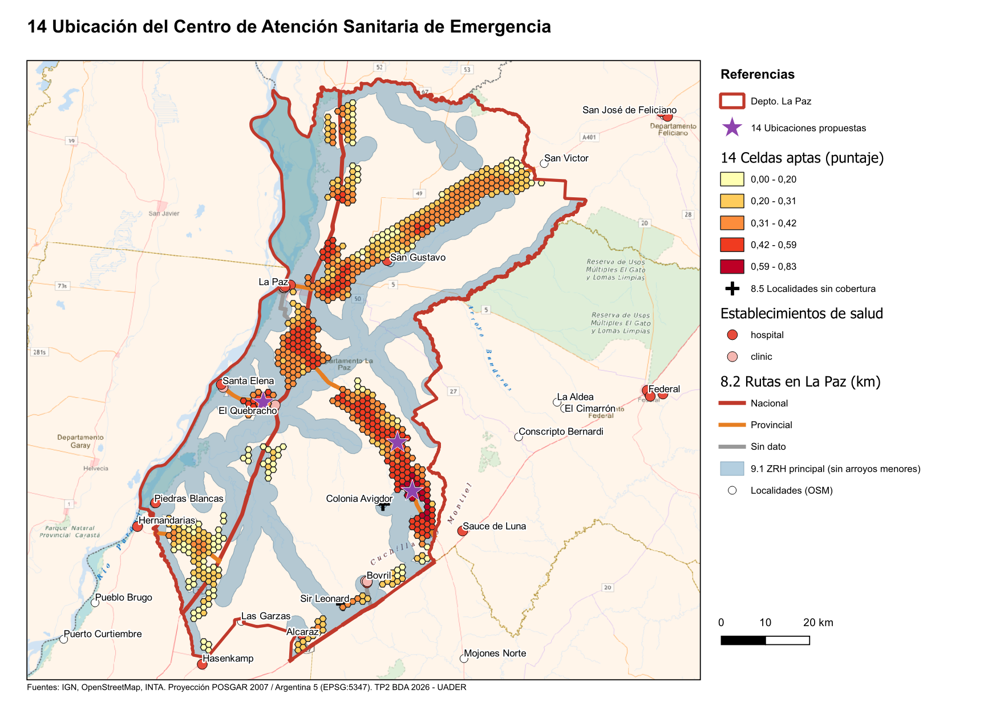
El candidato #1 está sobre la RP6, entre Colonia Avigdor y Bovril, en el centro-este del departamento. Cae justo en el sector que hoy no tiene ningún servicio de salud: Colonia Avigdor no tiene establecimiento a menos de 5 km (punto 8.5) y, por red vial, su hospital más cercano está en otro departamento (el Hospital Crispín Velázquez, en Federal), a 36 minutos en crecida. Con el CASE ahí quedaría a 14 minutos, y Bovril (8.790 hab., la segunda localidad del departamento) a 40 minutos por un camino que sigue habilitado durante la crecida. El sitio está sobre la propia RP6, fuera de la ZRH completa y de la principal, sin cuerpos de agua, sobre suelo agrícola-ganadero (unidad Viraró, IPC 22, así que no resta tierra agrícola de primera) y con un hexágono completo libre (1,46 km²). Es el de mayor puntaje (0,83), con una diferencia amplia sobre el resto, y el que más mejora la situación de quienes hoy están peor.
El candidato #2 también está sobre la RP6, pero más al norte, así que en la práctica es una variante del mismo corredor. Tiene menor beneficio porque queda más lejos de Colonia Avigdor, y una pequeña parte de la celda cae dentro de la ZRH. Solo se justificaría si el sitio #1 no estuviera disponible, por ejemplo por la titularidad de la tierra.
El candidato #3 está sobre la RPA02, junto a El Quebracho, en el oeste. Es el que menos beneficio aporta a las localidades peor servidas, porque las de alrededor ya tienen servicio, pero es el que alcanza más localidades en 45 minutos o menos en crecida (El Quebracho, Santa Elena, La Paz y San Gustavo, que suman más de 31.000 habitantes). Por eso lo vemos más como ubicación para un centro de distribución de medicamentos o una base de ambulancias que para un centro de atención.
Proponemos entonces el candidato #1 sobre la RP6 como ubicación del Centro de Atención Sanitaria de Emergencia. Cumple todas las condiciones excluyentes y es, entre las 787 celdas aptas, la que más mejora el acceso de la población que hoy tiene la peor accesibilidad. Además sigue siendo alcanzable cuando la crecida corta los vados y las planicies, que es justamente cuando se lo necesita. El resultado coincide con lo que fueron mostrando los puntos anteriores: el centro-este es el hueco de la cobertura de 5 km (8.5), y el centroide K-means del grupo Bovril–Alcaraz (10.4) también cae en el campo, fuera de los pueblos, otra señal de que falta oferta entre localidades. Como mejora, el modelo podría incorporar la titularidad de la tierra, la cota del terreno (con un MDE del IGN) y datos de población del INDEC por radio censal, para representar la demanda rural dispersa que hoy no está en el análisis (solo se usan las localidades de OSM).
Vale la pena contar cómo cambió el resultado durante el trabajo. En una primera versión el beneficio se calculaba en escenario normal y contra cualquier establecimiento, incluidos los consultorios. El primer puesto caía entonces junto a un nodo «La Paz» de 500 habitantes que resultó ser un duplicado erróneo de OSM (punto 6). Al depurar ese dato y medir en escenario de crecida contra hospitales, el resultado se estabilizó en el corredor de la RP6. Eso nos dejó claro que la calidad del dato de entrada pesa tanto como el método.
ref, población desactualizada o faltante). Hubo un nodo duplicado
de La Paz que hubo que depurar.| Archivo | Contenido |
|---|---|
TP2_LaPaz.sql | Script único y comentado: esquema, tablas, controles, consultas, funciones y análisis (puntos 6 a 14) |
sql/01…10_*.sql | El mismo script separado por punto |
sql/salidas/*.txt | Salida completa de la ejecución de cada script |
qgis/TP2_LaPaz.qgz | Proyecto QGIS: conexión PostGIS, capas agrupadas por punto, simbología, Argenmap y composiciones de impresión |
qgis/generar_proyecto.py | Script PyQGIS que arma el proyecto y exporta los mapas |
informe/mapas/*.png | Mapas del informe |
Para reproducirlo: (1) descargar las fuentes (IGN WFS, INTA WFS, Geofabrik); (2) cargar en el esquema fuentes con ogr2ogr;
(3) ejecutar TP2_LaPaz.sql (unos 20 min; los puntos 9 y 13 son los más pesados); (4) abrir TP2_LaPaz.qgz.